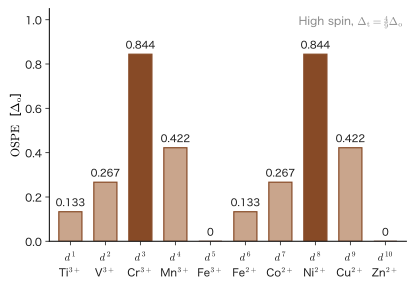

Chapter 46$d^n$ Configurations and the Ligand Field — High Spin and Low Spin, CFSE, and Site Preference in Spinels
The iron ion $\mathrm{Fe^{2+}}$ has six electrons in its $3d$ orbitals (a $d^6$ configuration) in both of the following two complexes (a complex is a metal ion with molecules or ions, called ligands, bonded around it). Yet $[\mathrm{Fe(H_2O)_6}]^{2+}$, with six water molecules coordinated, is attracted to a magnet (paramagnetic), whereas $[\mathrm{Fe(CN)_6}]^{4-}$, with six cyanide ions coordinated, hardly responds to a magnet (diamagnetic). With the same metal ion and the same number of $d$ electrons, why do the magnetic properties differ so much? The difference is whether four electrons are “unpaired” or none are, and the cause lies in how the six electrons are placed into the two groups of levels that we saw in the preceding chapters, $t_{2g}$ (three levels) and $e_g$ (two levels). In this chapter we examine the rules for placing the electrons and, as their consequence, the selection rules for magnetism, ionic radius, and crystal structure.
In the previous chapter (Chapter 44), we found the levels for the case of a single $d$ electron. When there are two or more electrons, two new problems appear. The first is the problem of where to put them: whether to put the electrons into $t_{2g}$ or into $e_g$. By the intuition of classical physics, this is merely a matter of placing balls on a staircase starting from the lowest step, and the answer is settled as “from the lowest-energy level upward.” In quantum mechanics, two effects are added to this. One is the Pauli exclusion principle (an orbital holds at most two electrons, with opposite spins). The other is the exchange interaction (Chapter 35, Section 35.6): electrons with aligned spins avoid one another, so the Coulomb repulsion becomes smaller. The latter has no counterpart in classical physics and is the source of Hund's rules (Chapter 34, Section 34.6). If the level spacing $\Delta_o$ is small, Hund's rules win, and the electrons enter $e_g$ as well with their spins aligned (high spin); if $\Delta_o$ is large, the electrons avoid $e_g$ and form pairs in $t_{2g}$ (low spin). Weighing these two effects against each other is the first theme of this chapter.
The second is that, once the way of placing the electrons is fixed, the properties of the material are fixed. The number of unpaired electrons determines the magnetic moment (Curie's law, Introductory University Physics, Chapter 51, Section 51.4 (in Japanese)). When electrons enter $e_g$, the ionic radius becomes larger, and when only $t_{2g}$ is filled, it becomes smaller. The stabilization gained by placing electrons in $t_{2g}$ (the crystal field stabilization energy, CFSE) traces a “double hump” curve in the hydration enthalpies and the ionic radii. Furthermore, the site preference—whether a metal ion enters a tetrahedral interstice or an octahedral interstice formed by oxide ions—can also be explained by the CFSE. This choice determines the properties of magnets (ferrites) and of the cathode materials of lithium-ion batteries ($\mathrm{LiMn_2O_4}$, $\mathrm{LiCoO_2}$, $\mathrm{LiFePO_4}$). How much $\Delta_o$ changes with the kind of ligand (the spectrochemical series) is also organized in this chapter.
- How to write a $t_{2g}^{a}e_g^{b}$ configuration, and all the configurations from $d^1$ through $d^{10}$ (number of unpaired electrons, spin quantum number $S$, CFSE, spin-only magnetic moment, ground term). Only $d^4$ through $d^7$ have two possible configurations (high spin and low spin)
- The competition between Hund's rules and $\Delta_o$. Using bookkeeping based on the three kinds of electron pairs (same orbital, $U_0$; different orbitals with opposite spins, $U_0-2J$; same spin, $U_0-3J$), we find the pairing energy $P$ and derive that high spin results when $\Delta_o\lt P$. Spin crossover
- CFSE $=(-4n_t+6n_e)Dq+(\text{number of extra pairs})P$ and its double hump. How it shows up in ionic radii, hydration enthalpies, and the Irving–Williams series. Conversion among $\mathrm{cm^{-1}}$, eV, and $\mathrm{kJ/mol}$. Limitations of the CFSE
- The spectrochemical series (ligands and metal ions) and $\Delta_o$ of representative $[\mathrm{M(L)_6}]$. Why the point-charge model cannot explain the series
- The magnetic moment $\mu_{\mathrm{eff}}=\sqrt{n_{\mathrm u}(n_{\mathrm u}+2)}\,\mu_{\mathrm B}$, the Curie constant $\mu_0N_{\mathrm A}\mu_{\mathrm B}^2/(3k_{\mathrm B})=1.5714\times10^{-6}\ \mathrm{m^3\,K\,mol^{-1}}$, and the quenching of the orbital angular momentum (the difference between $A$ and $E$ ground states and a $T$ ground state)
- The structure of the spinel $\mathrm{AB_2O_4}$ (tetrahedral site 8a, octahedral site 16d), normal and inverse spinels, the table of octahedral site preference energy (OSPE), the site preferences of $\mathrm{NiFe_2O_4}$, $\mathrm{Fe_3O_4}$, $\mathrm{ZnCr_2O_4}$, and $\mathrm{Mn_3O_4}$, the ferrimagnetism of $\mathrm{Fe_3O_4}$ ($4\mu_{\mathrm B}$), and the battery materials $\mathrm{LiMn_2O_4}$, $\mathrm{LiCoO_2}$, and $\mathrm{LiFePO_4}$
Source notes: This chapter supplements material that is not in the original notes. Related notes: Yasuhide Mochizuki, “Physics Notes: Quantum Mechanics 3,” pp. 50–55 (Coulomb integral and exchange integral), pp. 65–68 (ligand field theory).
46.1 Filling Electrons into $t_{2g}$ and $e_g$ — A List of $d^n$ Configurations
46.1.1 How to write $t_{2g}^{a}e_g^{b}$ configurations
As we saw in the previous chapter (Chapter 44, Section 44.3), in an octahedral field the five $d$ orbitals split into the threefold $t_{2g}$ ($d_{xy},d_{yz},d_{zx}$) and the twofold $e_g$ ($d_{z^2},d_{x^2-y^2}$), and the one-electron levels, with the center of gravity taken as 0, are given by $$ E(t_{2g})=-4Dq=-\tfrac25\Delta_o,\qquad E(e_g)=+6Dq=+\tfrac35\Delta_o,\qquad \Delta_o=10Dq $$ Taking the electron's spin into account, each spatial orbital has two spin orbitals, spin up ($\uparrow$, $\alpha$) and spin down ($\downarrow$, $\beta$). Hence $t_{2g}$ has six spin orbitals and $e_g$ has four, ten in all, and by the Pauli exclusion principle only one electron can occupy a single spin orbital (in Chapter 33 we saw that a Slater determinant vanishes if it contains the same spin orbital twice).
Definition 46.1: $t_{2g}^{a}e_g^{b}$ configuration
Among $n$ $d$ electrons, the state in which $a$ electrons occupy the $t_{2g}$ orbitals and $b$ electrons occupy the $e_g$ orbitals is called the electron configuration $t_{2g}^{a}e_g^{b}$ ($a+b=n$, $0\le a\le6$, $0\le b\le4$). The $d^n$ configurations for $n=0,1,\dots,10$ are collectively written simply as “$d^n$”.
The word “configuration” requires some care here. A single configuration $t_{2g}^{a}e_g^{b}$ contains many possibilities for which orbitals the electrons occupy and with which spins, and the repulsion between electrons (Coulomb repulsion) splits these into slightly different energies (for $d^2$ there are 45 states; Chapter 47). In this chapter, we first investigate the relationship between the choice of configuration and the properties of the material by means of a crude treatment (Section 46.2) that starts from the picture “the electrons enter the one-electron levels independently” and adds the repulsion of electron pairs as bookkeeping. The precise treatment of many-electron terms is deferred to the next chapter.
The rules for filling in the electrons are the same as those for the electron configurations of atoms (Chapter 34, Section 34.1).
- Pauli exclusion principle: at most one electron per spin orbital. That is, at most two electrons can enter a single spatial orbital, and when there are two, their spins point in opposite directions.
- Aufbau principle: fill the levels in order, starting from the lowest-energy level. Since $\Delta_o\gt0$ in an octahedral field, $t_{2g}$ comes first.
- Hund's rules (Chapter 34, Section 34.6): when there are several orbitals of equal energy (degenerate orbitals), put the electrons into separate orbitals as far as possible, with their spins aligned.
The physical basis of Rule 3 is that electrons with aligned spins avoid each other spatially because of the Pauli principle (Fermi hole; Chapter 33, Section 33.6.7: electrons with the same spin cannot come to the same position), so that the Coulomb repulsion becomes smaller. The repulsion energy of two electrons that occupy different orbitals is $U'-J$ for the same spin and $U'$ for opposite spins ($U'$ corresponds to $U_{ab}$ of Chapter 35, and is a quantity different from the repulsion $U_0$ of a pair that enters the same orbital with opposite spins; we sort this out in Section 46.2. See Chapter 35, Section 35.3, Theorem 35.2 (4), and Section 35.6). The larger $J$ is, the more advantageous it is to align the spins.
When there is a crystal field, Rule 2 and Rule 3 collide. Filling the $t_{2g}$ orbitals first is Rule 2, and putting electrons into degenerate orbitals with aligned spins is Rule 3. For $d^1,d^2,d^3$, the two rules are compatible if one electron is placed in each of the three $t_{2g}$ orbitals, with spins in the same direction. From the fourth electron on, the situation changes.
46.1.2 From $d^1$ to $d^{10}$ — high spin and low spin
There are two possible destinations for the fourth electron. (i) Put it into a $t_{2g}$ orbital that already holds one electron, with the opposite spin ($t_{2g}^4$). Since the electron stays in $t_{2g}$, we gain crystal field energy, but we pay the repulsion energy for pairing the electrons. (ii) Put it into the upper level $e_g$, with the same spin direction ($t_{2g}^3e_g^1$). We lose $\Delta_o$ in crystal field energy, but since the spins remain aligned, we keep the gain in exchange energy. Which is more stable is decided by the magnitude of $\Delta_o$ relative to the cost of pairing the electrons (Section 46.2).
Definition 46.2: High spin and low spin
For the same $d^n$, the configuration in which electrons enter $e_g$ (the configuration with the maximum number of unpaired electrons) is called high spin (HS), and the configuration in which $t_{2g}$ is filled preferentially (the configuration with fewer unpaired electrons) is called low spin (LS). With weak-field ligands the result is high spin, and with strong-field ligands it is low spin.
For $d^1,d^2,d^3$ and $d^8,d^9,d^{10}$, the configuration is determined uniquely, regardless of the magnitude of $\Delta_o$. Only $d^4$ through $d^7$ can take two forms, high spin and low spin. Figure 46.1 shows all the configurations. Taking $d^8$ as an example, all six spin orbitals of $t_{2g}$ are filled, and the remaining two electrons enter the two orbitals of $e_g$ separately, with spins in the same direction. As for other ways of filling, a configuration in which, for example, the two electrons are paired in the same orbital of $e_g$ merely pays the extra pair repulsion and gains nothing, and a configuration in which one $t_{2g}$ electron is raised to $e_g$ pays an extra $\Delta_o$; both are therefore disadvantageous.
Table 46.1 summarizes, for each configuration, the number of unpaired electrons $n_{\mathrm u}$, the total spin $S=n_{\mathrm u}/2$, the crystal field stabilization energy (CFSE; Section 46.3), the spin-only magnetic moment $\mu_{\mathrm{so}}=\sqrt{n_{\mathrm u}(n_{\mathrm u}+2)}\,\mu_{\mathrm B}$ (Section 46.5), and the ground term. Each quantity is derived in Sections 46.3 and 46.5, so here we only explain how to read the table. The “CFSE” column gives $(-4a+6b)\,Dq$, which is determined solely by how the electrons are distributed between $e_g$ and $t_{2g}$; the pairing energy $P$ is shown separately in the “Number of extra pairs” column.
| $n$ | Configuration | HS/LS | $n_{\mathrm u}$ | $S$ | CFSE (in $Dq$, excluding $P$) | Number of extra pairs | $\mu_{\mathrm{so}}/\mu_{\mathrm B}$ | Ground term |
|---|---|---|---|---|---|---|---|---|
| 1 | $t_{2g}^1$ | — | 1 | 1/2 | $-4$ | 0 | 1.73 | ${}^2T_{2g}$ |
| 2 | $t_{2g}^2$ | — | 2 | 1 | $-8$ | 0 | 2.83 | ${}^3T_{1g}$ |
| 3 | $t_{2g}^3$ | — | 3 | 3/2 | $-12$ | 0 | 3.87 | ${}^4A_{2g}$ |
| 4 | $t_{2g}^3e_g^1$ | HS | 4 | 2 | $-6$ | 0 | 4.90 | ${}^5E_g$ |
| $t_{2g}^4$ | LS | 2 | 1 | $-16$ | 1 | 2.83 | ${}^3T_{1g}$ | |
| 5 | $t_{2g}^3e_g^2$ | HS | 5 | 5/2 | $0$ | 0 | 5.92 | ${}^6A_{1g}$ |
| $t_{2g}^5$ | LS | 1 | 1/2 | $-20$ | 2 | 1.73 | ${}^2T_{2g}$ | |
| 6 | $t_{2g}^4e_g^2$ | HS | 4 | 2 | $-4$ | 0 | 4.90 | ${}^5T_{2g}$ |
| $t_{2g}^6$ | LS | 0 | 0 | $-24$ | 2 | 0 | ${}^1A_{1g}$ | |
| 7 | $t_{2g}^5e_g^2$ | HS | 3 | 3/2 | $-8$ | 0 | 3.87 | ${}^4T_{1g}$ |
| $t_{2g}^6e_g^1$ | LS | 1 | 1/2 | $-18$ | 1 | 1.73 | ${}^2E_g$ | |
| 8 | $t_{2g}^6e_g^2$ | — | 2 | 1 | $-12$ | 0 | 2.83 | ${}^3A_{2g}$ |
| 9 | $t_{2g}^6e_g^3$ | — | 1 | 1/2 | $-6$ | 0 | 1.73 | ${}^2E_g$ |
| 10 | $t_{2g}^6e_g^4$ | — | 0 | 0 | $0$ | 0 | 0 | ${}^1A_{1g}$ |
Check that the HS values in the CFSE column ($-4,-8,-12,-6,0,-4,-8,-12,-6,0$) agree with Example 44.5 (Table 44.2) of the previous chapter. The CFSE is the same for $d^n$ and $d^{n+5}$ because the CFSE of $d^5$ (high spin) is 0 by the center-of-gravity rule. In the high-spin case, the number of unpaired electrons is $n_{\mathrm u}=n$ ($n\le5$) and $10-n$ ($n\ge5$).
46.1.3 Reading ground-term symbols such as ${}^5T_{2g}$
The last column of Table 46.1 gives the names of many-electron states; it is the counterpart, in a crystal field, of the term symbol ${}^{2S+1}L$ of Chapter 34, Section 34.2. The superscript $2S+1$ at the upper left is the spin multiplicity, the letters $A,E,T$ give the degeneracy of the orbital part ($A$: nondegenerate, $E$: twofold, $T$: threefold; the Mulliken symbols of Chapter 45), and the subscripts $1,2$ and $g$ are finer distinctions among the group representations. By convention, one-electron orbitals are written in lowercase ($t_{2g}$, $e_g$) and many-electron states in uppercase ($T_{2g}$, $E_g$).
Notation: How to tell $A$, $E$, and $T$ apart (high-spin configurations)
There is a simple way of counting that determines the letter of the symbol. A shell in which each orbital is occupied by one electron, all with the same spin direction (a half-filled shell), and a completely filled shell (a closed shell) each have only one possible spatial part, so they are not degenerate. Therefore, for example, $t_{2g}^3$ (all three spins up) is $A$, and $t_{2g}^6$ is also $A$. If there is one extra electron (or one extra hole) beyond this, the number of places where it can be put becomes the degeneracy. If there is an “extra one” in $t_{2g}$ (the electron of $t_{2g}^1$, the single down-spin electron of $t_{2g}^4$, or the hole of $t_{2g}^5$), there are three ways, so the symbol is $T$; if there is an extra one in $e_g$ (the electron of $e_g^1$ or the hole of $e_g^3$), there are two ways, so the symbol is $E$. When two electrons of the same spin are put into the three $t_{2g}$ orbitals ($t_{2g}^2$), there are $3$ ways to place them, so the symbol is $T$. This way of counting reproduces all the letters $A,E,T$ in Table 46.1 (examples: high-spin $d^4$, $t_{2g}^3e_g^1$, gives $A\times E=E$; high-spin $d^6$, $t_{2g}^3(\uparrow)\,t_{2g}^1(\downarrow)\,e_g^2$, gives $T$). Determining the subscripts $1,2$ requires the direct products of Chapter 45.
This letter becomes important in Section 46.5. If the ground state is $A$ or $E$, there is no orbital degeneracy (or the orbital angular momentum is quenched by the crystal field), and the magnetic moment is almost entirely limited to the spin contribution. If it is $T$, orbital angular momentum remains and contributes to the magnetic moment.
The configurations whose ground term is $E_g$ (high-spin $d^4$, ${}^5E_g$; low-spin $d^7$, ${}^2E_g$; and $d^9$, ${}^2E_g$) have an odd number of electrons in the $e_g$ orbitals and the orbitals are degenerate, so the octahedron is strongly distorted by the Jahn–Teller effect (Chapter 44, Section 44.6). The octahedra of $\mathrm{Mn^{3+}}$, $\mathrm{Cr^{2+}}$, and $\mathrm{Cu^{2+}}$ that are elongated in the axial direction are examples. This distortion comes into play in Section 46.3 ($\mathrm{Cu^{2+}}$ and the Irving–Williams series) and in Section 46.6 ($\mathrm{Mn^{3+}}$, $\mathrm{Mn_3O_4}$, and $\mathrm{LiMn_2O_4}$).
Example 46.1: High-spin and low-spin configurations of $\mathrm{Co^{2+}}$ ($d^7$)
For $\mathrm{Co^{2+}}$ in an octahedral field, write the high-spin and low-spin configurations in the form $t_{2g}^{a}e_g^{b}$, and find for each the number of unpaired electrons $n_{\mathrm u}$, the spin $S$, the spin-only magnetic moment, and the CFSE in units of $Dq$ due to the distribution of the electrons.
Solution. $\mathrm{Co^{2+}}$ is $3d^7$. High spin: By Hund's rules, put up to five electrons with the same spin direction into the five orbitals, one in each (three in $t_{2g}$ and two in $e_g$), and put the remaining two into two of the $t_{2g}$ orbitals with the opposite spin. The configuration is $t_{2g}^5e_g^2$. Of the three $t_{2g}$ orbitals, two are paired and one holds only a single electron; the unpaired electrons are one in $t_{2g}$ and two in $e_g$, so $n_{\mathrm u}=3$ and $S=3/2$. The spin-only magnetic moment is $\sqrt{3\times5}=\sqrt{15}=3.87\,\mu_{\mathrm B}$. The CFSE is $(-4)\times5+6\times2=-20+12=-8\,Dq$. Low spin: Fill $t_{2g}$ first with six electrons, and the remaining one goes into $e_g$: $t_{2g}^6e_g^1$. The only unpaired electron is the one in $e_g$, so $n_{\mathrm u}=1$ and $S=1/2$, and the magnetic moment is $\sqrt{1\times3}=1.73\,\mu_{\mathrm B}$. The CFSE is $(-4)\times6+6\times1=-24+6=-18\,Dq$. The stabilization due to the distribution of the electrons is $-8Dq$ for high spin and $-18Dq$ for low spin. However, low spin has one more pair in $t_{2g}$ than high spin, and it pays the repulsion energy $P$ of that pair separately (Section 46.2). Therefore $\mathrm{CFSE}_{\mathrm{LS}}=-18Dq+P$.
Example 46.2: Why is there no distinction between high spin and low spin for $d^8$?
(1) An octahedral complex of $\mathrm{Ni^{2+}}$ ($d^8$) has two unpaired electrons no matter how large $\Delta_o$ becomes. Why is the configuration in which the two $e_g^2$ electrons are paired and placed in a single $e_g$ orbital (the state of $t_{2g}^6e_g^2$ with the pair formed within $e_g$) unfavorable? (2) As a separate question, an example in which $d^8$ becomes low spin is the planar four-coordinate complex. Explain the reason from the levels in the absence of axial ligands (Chapter 44, Sections 44.5 and 44.6).
Solution. (1) Since $t_{2g}^6$ is completely filled, the remaining two electrons have no choice but to enter $e_g$. Compare the configuration in which they are placed in the two $e_g$ orbitals with parallel spins and the configuration in which they are paired in one orbital. Since the two $e_g$ orbitals are degenerate (have equal energy), the one-electron energy $+0.6\Delta_o\times2$ is the same. The only difference is the repulsion between the electrons: it is $U'-J$ if they are put into different orbitals with the same spin and $U_0$ if they are paired in the same orbital, and, as shown in Section 46.2, $U_0\gt U'-J$. Therefore pairing brings only a loss and no gain. That is, there is no room at all to “avoid $e_g$ and pack the electrons into $t_{2g}$,” and the $d^8$ configuration is uniquely determined. (2) In a planar four-coordinate (square-planar) complex there are no axial ligands, so only the $d_{x^2-y^2}$ orbital, which points toward the ligands, rises greatly in energy (Sections 44.5 and 44.6), and it is more stable to pack the eight electrons in pairs into the four orbitals other than $d_{x^2-y^2}$ and leave $d_{x^2-y^2}$ empty. This configuration is diamagnetic and is seen in complexes of $\mathrm{Pd^{2+}}$, $\mathrm{Pt^{2+}}$, and $\mathrm{Ni^{2+}}$ with strong-field ligands (e.g., $[\mathrm{Ni(CN)_4}]^{2-}$).
46.2 Competition between Hund's Rules and $\Delta_o$ — Pairing Energy, High Spin, and Low Spin
46.2.1 Gain and loss when one electron is moved
Take $d^4$ as an example and compare the high-spin configuration $t_{2g}^3e_g^1$ with the low-spin configuration $t_{2g}^4$. The low-spin state is obtained from the high-spin state by moving one electron from $e_g$ to $t_{2g}$, so that one of the $t_{2g}$ orbitals is paired. The moved electron goes to a level lower by $\Delta_o$, so the one-electron energy gains $\Delta_o$. In return, pairing the electrons increases the electron–electron repulsion. We call this increase (the energy needed to make one extra pair) the pairing energy $P$. The energy difference between low spin and high spin is then
\begin{equation} E_{\mathrm{LS}}-E_{\mathrm{HS}}=-\Delta_o+P \qquad(d^4) \label{eq:46-d4} \end{equation}Thus, if $\Delta_o\gt P$, the low-spin state is stable, and if $\Delta_o\lt P$, the high-spin state is stable. This “competition between $\Delta_o$ and $P$” is the essence of deciding between high spin and low spin. For $d^5$, $d^6$, and $d^7$ as well, the number of electrons that move and the number of extra pairs created in going from high spin to low spin are the same number, and the $-\Delta_o+P$ of Eq. \eqref{eq:46-d4} becomes that number times as large (Section 46.2.3). Below, we build up what determines $P$ from the $U$ and $J$ of Part VII.
46.2.2 The bookkeeping rule — three kinds of electron pairs
In Chapter 35 we saw that the energy of a many-electron state that can be written as a single Slater determinant can be expressed in terms of the one-electron energies $\varepsilon_a\equiv h_{aa}$ of the spin orbitals $a,b$ (the sum of the kinetic energy, the attraction to the nuclei, and, here, the crystal field), the Coulomb integrals $U_{ab}$, and the exchange integrals $J_{ab}$ (Chapter 35, Section 35.7; for the correspondence with the $J$ and $K$ of Szabo–Ostlund, see the box in Section 35.3).
Theorem 46.1: Energy of a single Slater determinant (the bookkeeping rule)
The energy of a Slater determinant built from a set $\{a\}$ of occupied spin orbitals is given by the following sum over electron pairs: \begin{equation} E=\sum_{a}\varepsilon_a+\sum_{a\lt b}\bigl(U_{ab}-J_{ab}\bigr) \label{eq:46-acct} \end{equation} Here $a\lt b$ means that the pairs of occupied spin orbitals are counted one pair at a time. The exchange integral survives only for pairs with parallel spins: $J_{ab}=\delta_{s_as_b}J_{pq}$ (Chapter 35, Section 35.3, where $p,q$ are spatial orbitals).
The second term of Eq. \eqref{eq:46-acct} is the total of the repulsion energies, one for each electron pair. Among the five orbitals of the $d$ shell, the values of $U_{ab}$ and $J_{ab}$ differ slightly from one pair of orbitals to the next. In this chapter, therefore, we use a crude treatment: we sort the pairs into three kinds and assign one typical value to each (this is the same bookkeeping as in §3 of the explanation of the related simulator “Many-Electron States and the Ligand Field”).
Definition 46.3: Three kinds of electron pairs ($U_0$, $J$)
For two electrons in the same $d$ shell, we take the repulsion energy to be one of the following three kinds (Figure 46.2).
- A pair in the same orbital with opposite spins: $U_0$.
- A pair in different orbitals with opposite spins: $U'=U_0-2J$.
- A pair in different orbitals with spins in the same direction: $U'-J=U_0-3J$ ($J\gt0$ is a typical value of the exchange integral).
We add a remark on how the three values are related. Value (3) is nothing more than (2) with the $-J$ from the exchange integral added (the $-J_{ab}$ in Eq. \eqref{eq:46-acct}). The relation that (2) equals $U_0-2J$ (Kanamori's relation) follows, for the shell of a spherically symmetric atom, from the postulate that the total energy does not change when the orbitals are replaced (whether we use real orbitals or complex orbitals). We saw in Chapter 34, Section 34.5 that it holds exactly for the $p$ shell. There, the Coulomb integral for $p$ orbitals along the same axis is $U_{zz}=F_0+4F_2$, that for perpendicular axes is $U_{xz}=F_0-2F_2$, and the exchange integral is $J_{xz}=3F_2$, so that indeed $U_{xz}=U_{zz}-2J_{xz}$. In the $d$ shell, $F_0,F_2,F_4$ all appear and the values differ from one pair of orbitals to the next, so $U'=U_0-2J$ is an approximation (an average value). Also, two electrons in the same orbital necessarily have opposite spins, so $U_0$ contains no exchange integral.
These $U$ and $J$ are quantities of the same kind as the parameters that the DFT+$U$ method of density functional theory (AD 07 (in Japanese)) assigns to the $3d$ orbitals of transition-metal oxides (Hubbard's $U$ and Hund's coupling $J$; the effective value is written $U_{\mathrm{eff}}=U-J$). The competition between $\Delta_o$ and $U$, $J$ is also the starting point when one studies the electronic states of transition-metal compounds in Computational Materials Science (AD 05).
46.2.3 The critical $\Delta_o$ — the point where high spin and low spin switch
Let the one-electron energies be $\varepsilon(t_{2g})=-0.4\Delta_o$ and $\varepsilon(e_g)=+0.6\Delta_o$, and count the three kinds of electron pairs and substitute the counts into Eq. \eqref{eq:46-acct}. A configuration of $n$ electrons contains $n(n-1)/2$ electron pairs. Of these, let $N_0$ be the number of opposite-spin pairs in the same orbital, $N_{\mathrm{op}}$ the number of opposite-spin pairs in different orbitals, and $N_{\mathrm{ss}}$ the number of same-spin pairs in different orbitals ($N_0+N_{\mathrm{op}}+N_{\mathrm{ss}}=n(n-1)/2$). The counting rule is as follows. Suppose there are $N_\uparrow$ spin-up electrons, $N_\downarrow$ spin-down electrons, and $N_0$ orbitals that each hold a pair of electrons. Since all same-spin pairs are in different orbitals, $N_{\mathrm{ss}}=\binom{N_\uparrow}{2}+\binom{N_\downarrow}{2}$. There are $N_\uparrow N_\downarrow$ opposite-spin pairs, of which $N_0$ are in the same orbital, so $N_{\mathrm{op}}=N_\uparrow N_\downarrow-N_0$. For example, for high-spin $d^7$ ($N_\uparrow=5$, $N_\downarrow=2$, $N_0=2$), we get $N_{\mathrm{ss}}=10+1=11$ and $N_{\mathrm{op}}=10-2=8$. The contribution of the electron pairs is then given by
\begin{equation} E_{\mathrm{pair}}=N_0U_0+N_{\mathrm{op}}(U_0-2J)+N_{\mathrm{ss}}(U_0-3J) =\frac{n(n-1)}{2}U_0-2J\,N_{\mathrm{op}}-3J\,N_{\mathrm{ss}} \label{eq:46-pair} \end{equation}The first term on the right-hand side is $U_0$ counted for $n(n-1)/2$ pairs, independent of the configuration, so it cancels in the difference between high spin and low spin. Therefore, only $J$ determines the difference. Table 46.2 summarizes the numbers of pairs for $d^4$ through $d^7$ and the difference between the electron-pair contributions of low spin and high spin, $\Delta E_{\mathrm{pair}}=E_{\mathrm{pair}}(\mathrm{LS})-E_{\mathrm{pair}}(\mathrm{HS})$.
| $n$ | High spin | Low spin | $\Delta E_{\mathrm{pair}}$ | Number of electrons moved $N_{\mathrm{mv}}$ | $P=\Delta E_{\mathrm{pair}}/N_{\mathrm{mv}}$ | ||||
|---|---|---|---|---|---|---|---|---|---|
| $N_0$ | $N_{\mathrm{op}}$ | $N_{\mathrm{ss}}$ | $N_0$ | $N_{\mathrm{op}}$ | $N_{\mathrm{ss}}$ | ||||
| 4 | 0 | 0 | 6 | 1 | 2 | 3 | $5J$ | 1 | $5J$ |
| 5 | 0 | 0 | 10 | 2 | 4 | 4 | $10J$ | 2 | $5J$ |
| 6 | 1 | 4 | 10 | 3 | 6 | 6 | $8J$ | 2 | $4J$ |
| 7 | 2 | 8 | 11 | 3 | 9 | 9 | $4J$ | 1 | $4J$ |
For example, for $d^4$, the high-spin state (all four electrons in the same direction) has only $N_{\mathrm{ss}}=\binom42=6$ same-spin pairs, so $E_{\mathrm{pair}}=6U_0-18J$. The low-spin state $t_{2g}^4$ (↑↓, ↑, ↑) has one pair in the same orbital, two opposite-spin pairs in different orbitals (the paired ↓ with each of the other two ↑), and three same-spin pairs (among the three ↑), so $E_{\mathrm{pair}}=U_0+2(U_0-2J)+3(U_0-3J)=6U_0-13J$. The difference is $\Delta E_{\mathrm{pair}}=5J$. On the other hand, the difference in the one-electron energy is $-\Delta_o$ for $d^4,d^7$, because one electron moves, $e_g\to t_{2g}$, and $-2\Delta_o$ for $d^5,d^6$, because two electrons move. Collecting these, we obtain
\begin{equation} E_{\mathrm{LS}}-E_{\mathrm{HS}}=-N_{\mathrm{mv}}\,\Delta_o+\Delta E_{\mathrm{pair}}=N_{\mathrm{mv}}\,(P-\Delta_o),\qquad P\equiv\frac{\Delta E_{\mathrm{pair}}}{N_{\mathrm{mv}}} \label{eq:46-ELSHS} \end{equation}Here $N_{\mathrm{mv}}=1,2,2,1$ for $d^4,d^5,d^6,d^7$ is the number of electrons that move from $e_g$ to $t_{2g}$, which equals the number of extra electron pairs created. We define the $P$ in this expression as the pairing energy in this bookkeeping. As the rightmost column of Table 46.2 shows, $P=5J,\,5J,\,4J,\,4J$.
Theorem 46.2: Criterion for high spin versus low spin
An octahedral complex with a $d^4$ through $d^7$ configuration has a high-spin ground state when $\Delta_o\lt P$ and a low-spin ground state when $\Delta_o\gt P$, and the switch occurs at $\Delta_c=P$. In this bookkeeping, $P=5J$ ($d^4,d^5$) and $4J$ ($d^6,d^7$), independent of $U_0$.
For $U_0=4$ eV and $J=0.8$ eV, the critical $\Delta_o$ is $5J=4.00$ eV for $d^4$, $5J=4.00$ eV for $d^5$, $4J=3.20$ eV for $d^6$, and $4J=3.20$ eV for $d^7$ (at exactly $\Delta_o=P$ the energies of the two configurations are equal, and when $\Delta_o$ is larger than that, low spin is lower). Figure 46.3 plots the total energies of high spin and low spin as functions of $\Delta_o$ for the four cases of $d^n$. The slopes of the two straight lines differ by the number of moved electrons $N_{\mathrm{mv}}$ ($d^4$, $d^7$: $-1$ per $\Delta_o$; $d^5$, $d^6$: $-2$). High spin (brown) is lower on the side where $\Delta_o$ is small, and low spin (blue) is lower on the large side. When we compute the energies of all the configurations obtained by choosing $n$ of the ten spin orbitals ($\binom{10}{6}=210$ ways for $d^6$) and search for the lowest, we find that in every case from $d^4$ through $d^7$ the ground state switches directly between two configurations (no configuration of intermediate spin appears along the way).

Let us compare the $P$ in this table with the values for actual complexes. According to tables such as Huheey's, the pairing energy of a free ion is about $17\,600\ \mathrm{cm^{-1}}$ ($2.18$ eV) for $\mathrm{Fe^{2+}}$ ($d^6$), about $21\,000\ \mathrm{cm^{-1}}$ ($2.60$ eV) for $\mathrm{Co^{3+}}$ ($d^6$), about $25\,500\ \mathrm{cm^{-1}}$ ($3.16$ eV) for $\mathrm{Mn^{2+}}$ ($d^5$), and about $30\,000\ \mathrm{cm^{-1}}$ ($3.72$ eV) for $\mathrm{Fe^{3+}}$ ($d^5$). The facts that $P$ for $d^5$ is larger than for $d^6$ ($5J$ versus $4J$) and that, for the same $d^n$, $P$ is larger for an ion of larger charge (the orbitals shrink and $J$ increases) agree with the trend in Table 46.2. On the other hand, $P=4J=3.2$ eV, obtained from $U_0=4$ eV and $J=0.8$ eV, is larger than the $2.2$ eV of $\mathrm{Fe^{2+}}$. The value $J=0.8$ eV was placed in the model as a rough measure of the magnitude of the exchange integral for $3d$ electrons ($J\approx0.5$–$0.9$ eV); to fit $\mathrm{Fe^{2+}}$ we would need $J\approx0.55$ eV. Inside a complex, covalent bonding spreads the orbitals and makes $J$ smaller, so the actual $P$ is smaller than the free-ion value (the reduction of the Racah parameters $B$ and $C$ in Chapter 47, Section 47.5; the nephelauxetic effect (electron-cloud expansion)). Note also that the $J$ of this chapter is only a rough guide for simple bookkeeping. The $P$ of an actual complex is expressed, as an energy difference between many-electron terms, by a linear combination of the Racah parameters $B$ and $C$ (Chapter 47, Section 47.2), and the $J$ of this chapter corresponds to a rough, average measure of those $B$ and $C$.
Discussion: Why does $U_0$ drop out of the formula?
Even if we change the configuration of the electrons, the total number of electron pairs, $n(n-1)/2$, does not change. Since $U_0$ is a quantity that “multiplies every pair in common,” it cancels in the difference between configurations. What changes when the configuration changes is “which pairs receive the exchange gain” and “the number of pairs that occupy different orbitals,” and these can be written with $J$ alone. This is the same structure as in Chapter 47, where we study the multiplets of atoms: Racah's $A$ (common to all terms) does not enter the differences, and only $B$ and $C$ do.
Example 46.3: Total energies of $d^6$ and the critical $\Delta_o$
Let $U_0=4$ eV, $J=0.8$ eV, $\varepsilon(t_{2g})=-0.4\Delta_o$, and $\varepsilon(e_g)=+0.6\Delta_o$. Write down the total energies of the high-spin $t_{2g}^4e_g^2$ and low-spin $t_{2g}^6$ states of $d^6$ as functions of $\Delta_o$, and find their values at $\Delta_o=3$ eV and the critical $\Delta_c$.
Solution. High spin: the $t_{2g}$ orbitals hold four electrons, ↑↑↑ and ↓, and the $e_g$ orbitals hold ↑↑. The number of electron pairs is $\binom62=15$. The pairs in the same orbital: the one ↑↓ pair in the doubly occupied $t_{2g}$ orbital. The pairs of the same spin: $\binom52=10$ pairs among the five ↑ (there is only one ↓, so there is no ↓↓ pair). The pairs of opposite spin in different orbitals: of the $5\times1=5$ pairs of an ↑ and the ↓, remove the one pair in the same orbital, which leaves 4. The total $1+10+4=15$ checks. By Eq. \eqref{eq:46-pair}, $E_{\mathrm{pair}}=U_0+10(U_0-3J)+4(U_0-2J)=15U_0-38J$. The one-electron energy is $4(-0.4\Delta_o)+2(0.6\Delta_o)=-0.4\Delta_o$. Therefore $$E_{\mathrm{HS}}=15U_0-38J-0.4\Delta_o .$$ Low spin: the $t_{2g}$ orbitals hold three ↑↓ pairs. There are 3 pairs in the same orbital; the pairs of the same spin number $3+3=6$ (among the ↑ and among the ↓); the pairs of opposite spin in different orbitals number $3\times3-3=6$; the total is 15. $E_{\mathrm{pair}}=3U_0+6(U_0-3J)+6(U_0-2J)=15U_0-30J$, and the one-electron energy is $6(-0.4\Delta_o)=-2.4\Delta_o$. Therefore $$E_{\mathrm{LS}}=15U_0-30J-2.4\Delta_o .$$ Inserting the numerical values ($15U_0=60$ eV, $38J=30.4$ eV, $30J=24$ eV), we obtain $E_{\mathrm{HS}}=29.6-0.4\Delta_o$ and $E_{\mathrm{LS}}=36-2.4\Delta_o$ (in eV). At $\Delta_o=3$ eV, $E_{\mathrm{HS}}=28.4$ eV and $E_{\mathrm{LS}}=28.8$ eV, so the high-spin state is $0.4$ eV lower. The condition that the two be equal, $29.6-0.4\Delta_c=36-2.4\Delta_c$, gives $2\Delta_c=6.4$ eV, so $\Delta_c=3.2$ eV. The difference is $E_{\mathrm{LS}}-E_{\mathrm{HS}}=8J-2\Delta_o=2(4J-\Delta_o)$, which agrees with Eq. \eqref{eq:46-ELSHS} ($N_{\mathrm{mv}}=2$, $P=4J$). For $\Delta_o\gt3.2$ eV the ground state is low spin.
Example 46.4: $[\mathrm{Fe(H_2O)_6}]^{2+}$ is high spin and $[\mathrm{Fe(CN)_6}]^{4-}$ is low spin
Let the pairing energy of $\mathrm{Fe^{2+}}$ ($d^6$) be $P=17\,600\ \mathrm{cm^{-1}}$. From $\Delta_o=10\,400\ \mathrm{cm^{-1}}$ for $[\mathrm{Fe(H_2O)_6}]^{2+}$ and $\Delta_o=33\,800\ \mathrm{cm^{-1}}$ for $[\mathrm{Fe(CN)_6}]^{4-}$, determine the ground-state configuration of each and find the spin-only magnetic moment. Also express the energy difference between the low-spin and high-spin states in $\mathrm{kJ/mol}$ ($1\ \mathrm{cm^{-1}}=0.011963\ \mathrm{kJ/mol}$).
Solution. For $d^6$, $N_{\mathrm{mv}}=2$, so Eq. \eqref{eq:46-ELSHS} gives $E_{\mathrm{LS}}-E_{\mathrm{HS}}=2(P-\Delta_o)$. Hydrated ion: since $\Delta_o-P=10\,400-17\,600=-7\,200\ \mathrm{cm^{-1}}\lt0$, the ion is high spin, $t_{2g}^4e_g^2$, with $n_{\mathrm u}=4$ and $\mu_{\mathrm{so}}=\sqrt{4\times6}=4.90\,\mu_{\mathrm B}$ (the measured value is about $5.1$–$5.7\,\mu_{\mathrm B}$, which is larger than $4.90$ because of the orbital contribution of the $T$ ground state; Section 46.5). The difference from the low-spin state is $E_{\mathrm{LS}}-E_{\mathrm{HS}}=2\times7\,200=14\,400\ \mathrm{cm^{-1}}=172\ \mathrm{kJ/mol}$, so the low-spin state is higher. Cyano complex: since $\Delta_o-P=33\,800-17\,600=+16\,200\ \mathrm{cm^{-1}}\gt0$, the complex is low spin, $t_{2g}^6$, with $n_{\mathrm u}=0$ and $\mu_{\mathrm{so}}=0$ (diamagnetic). $E_{\mathrm{LS}}-E_{\mathrm{HS}}=-2\times16\,200=-32\,400\ \mathrm{cm^{-1}}=-388\ \mathrm{kJ/mol}$, so the low-spin state is lower by as much as $388\ \mathrm{kJ/mol}$. The magnetism is completely different for the same $d^6$ because the ligands raise $\Delta_o$ by more than a factor of $3$ ($10\,400\to33\,800$) and so take it across $P$.
46.2.4 Spin crossover — when $\Delta_o\approx P$
When $\Delta_o$ is almost equal to $P$, the energy difference between the high-spin and low-spin states, $\Delta E_{\mathrm{HL}}=E_{\mathrm{HS}}-E_{\mathrm{LS}}=N_{\mathrm{mv}}(\Delta_o-P)$, becomes comparable to the thermal energy $k_{\mathrm B}T$, and the two states are interchanged by temperature, pressure, or light. This is called spin crossover (SCO). Complexes of $\mathrm{Fe^{2+}}$ (for example, $[\mathrm{Fe(phen)_2(NCS)_2}]$) are typical examples. In solids, a temperature-induced change of spin state is also seen for the $\mathrm{Co^{3+}}$ in $\mathrm{LaCoO_3}$, but how it should be assigned (a change from low spin to a state that includes intermediate spin, or a change to high spin) has long been debated. In the bookkeeping of this chapter, an intermediate-spin configuration does not appear as the ground state (we checked all configurations obtained by choosing $n$ of the 10 spin orbitals), but in actual complexes and solids it can appear, for example because covalent bonding lowers $J$.
Temperature: at high temperatures the high-spin state appears. The reason is entropy. Let $w$ be the number of states (the degeneracy). In the Boltzmann distribution (Introductory University Physics, Chapter 50, Section 50.3 (in Japanese)), the ratio of the probabilities of being in the two states is $w_{\mathrm{HS}}e^{-E_{\mathrm{HS}}/k_{\mathrm B}T}:w_{\mathrm{LS}}e^{-E_{\mathrm{LS}}/k_{\mathrm B}T}$. The high-spin ${}^5T_{2g}$ of $d^6$ has a fivefold spin degeneracy ($2S+1=5$) and a threefold orbital degeneracy, so it is $5\times3=15$-fold degenerate in all, whereas the low-spin ${}^1A_{1g}$ has degeneracy 1. The difference in electronic entropy due to this ratio of degeneracies is $R\ln15=22.5\ \mathrm{J\,K^{-1}\,mol^{-1}}$. In an actual complex, the metal–ligand distance is longer and the bonds are softer in the high-spin state, so the entropy of molecular vibration is also added, and the total entropy difference $\Delta S$ is several times this value. The temperature at which the free energy $\Delta G=\Delta H-T\Delta S$ ($\Delta H=H_{\mathrm{HS}}-H_{\mathrm{LS}}\gt0$, $\Delta S=S_{\mathrm{HS}}-S_{\mathrm{LS}}\gt0$) becomes 0 is $T_{1/2}=\Delta H/\Delta S$, and the high-spin fraction (the ratio of the $w$'s is included in $\Delta S$) can be written as
\begin{equation} n_{\mathrm{HS}}(T)=\frac{1}{1+\exp\!\bigl[(\Delta H-T\Delta S)/RT\bigr]} \label{eq:46-sco} \end{equation}The fraction is 0 (low spin) for $T\ll T_{1/2}$, 1 (high spin) for $T\gg T_{1/2}$, and exactly $1/2$ at $T=T_{1/2}$.
Pressure: the metal–ligand distance in the high-spin state is longer than in the low-spin state (Shannon's octahedral radii for $\mathrm{Fe^{2+}}$ are $0.78$ Å for high spin (Figure 46.4(b)) and $0.61$ Å for low spin). Under pressure, the low-spin state, which has the smaller volume, becomes favored. In addition, since $\Delta_o\propto R_{\mathrm{ML}}^{-5}$ ($R_{\mathrm{ML}}$ is the metal–ligand distance, which we wrote as $a$ in the point-charge model of Chapter 44; Chapter 44, Section 44.4), the effect that compression increases $\Delta_o$ beyond $P$ also applies. Light: a phenomenon is also known in which light is shone at low temperature to excite the low-spin state to the high-spin state and trap it in a metastable state (LIESST, light-induced excited spin state trapping). These phenomena are being studied for materials whose magnetism and color are switched by temperature, pressure, and light (sensors and memory elements).
Example 46.5: Transition temperature and high-spin fraction of spin crossover
Let $\Delta H=10\ \mathrm{kJ\,mol^{-1}}$ and $\Delta S=60\ \mathrm{J\,K^{-1}\,mol^{-1}}$ for a complex of $\mathrm{Fe^{2+}}$ (assumed values of a typical order of magnitude). (1) Find the ratio of the electronic entropy difference $R\ln15$ to $\Delta S$. (2) Find $T_{1/2}$ and the high-spin fractions at $T=100,150,200,300$ K from Eq. \eqref{eq:46-sco}.
Solution. (1) With $R=8.3145\ \mathrm{J\,K^{-1}\,mol^{-1}}$ and $\ln15=2.708$, we get $R\ln15=22.5\ \mathrm{J\,K^{-1}\,mol^{-1}}$. The ratio to $\Delta S=60$ is $22.5/60=0.38$, so the electronic contribution is about 40% of the total, and the rest comes from molecular vibration and other contributions. (2) $T_{1/2}=\Delta H/\Delta S=10\,000/60=167$ K. The quantity in the exponent of Eq. \eqref{eq:46-sco} is $(\Delta H-T\Delta S)/RT$. $T=100$ K: $(10\,000-6\,000)/(8.3145\times100)=4.81$, $n_{\mathrm{HS}}=1/(1+e^{4.81})=0.008$. $T=150$ K: $(10\,000-9\,000)/(1247.2)=0.80$, $n_{\mathrm{HS}}=1/(1+e^{0.80})=0.31$. $T=200$ K: $(10\,000-12\,000)/1662.9=-1.20$, $n_{\mathrm{HS}}=1/(1+e^{-1.20})=0.77$. $T=300$ K: $(10\,000-18\,000)/2494.3=-3.21$, $n_{\mathrm{HS}}=0.96$. Over the range from about $100$ K to $250$ K, the system changes gradually from low spin to high spin. (In an actual crystal, the elastic interaction between molecules (a cooperative effect) can sometimes make the switching much sharper.)
Caution: General rules of thumb for high spin versus low spin
(1) In octahedral $3d$ complexes, ligands on the weak-field side of the spectrochemical series (Section 46.4), such as halide ions and $\mathrm{H_2O}$, give high spin, and ligands on the strong-field side, such as $\mathrm{CN^-}$, $\mathrm{CO}$, and phen, give low spin. (2) Even with the same ligand, $\mathrm{M^{3+}}$, which has the larger charge, has a larger $\Delta_o$ and therefore becomes low spin more readily than $\mathrm{M^{2+}}$ ($\mathrm{Co^{3+}}$ is low spin in most complexes, except $[\mathrm{CoF_6}]^{3-}$). However, $P$ also increases with charge ($30\,000\ \mathrm{cm^{-1}}$ for $\mathrm{Fe^{3+}}$), so $\mathrm{Fe^{3+}}$ is almost always high spin except in cyano complexes. (3) Because the orbitals of the $4d$ and $5d$ transition metals are more extended, their $\Delta_o$ is larger than that of the $3d$ metals by several tens of percent and their $P$ is smaller, so almost all of them are low spin. (4) Tetrahedral complexes have a small $\Delta_t=\tfrac49\Delta_o$ (Chapter 44, Section 44.5), so they are almost always high spin. (5) For $d^8$ there is no distinction between high spin and low spin (Example 46.2).
Related simulator: in tab ① of Many-Electron States and the Ligand Field, you can fill in the electrons one at a time and check each term of the bookkeeping and the switching between high spin and low spin (the explanation is in §3–4 of this page).
46.3 Crystal Field Stabilization Energy (CFSE) — The Double Hump
46.3.1 Definition of the CFSE
The quantity that expresses how much a given electron configuration gains (becomes stabilized) because of the crystal field is the crystal field stabilization energy. As the reference for gain or loss, we take the spherical field (the position of the center of gravity, where all the $d$ orbitals have the same energy). By the center-of-gravity rule of the previous chapter, the weighted sum of the energies of the five orbitals is 0, so the high-spin $d^5$ configuration, in which each of the five orbitals holds one electron, receives no crystal field energy at all.
Definition 46.4: Crystal field (ligand field) stabilization energy (CFSE)
For a configuration $t_{2g}^{a}e_g^{b}$ in an octahedral field, the crystal field stabilization energy (also called the ligand field stabilization energy, LFSE; this book writes it as CFSE) is defined by \begin{equation} \mathrm{CFSE}=(-4a+6b)\,Dq+(\text{number of extra pairs})\,P=\bigl(-0.4a+0.6b\bigr)\Delta_o+(\text{number of extra pairs})\,P \label{eq:46-cfse} \end{equation} Here the “number of extra pairs” is the number of additional electron pairs compared with the configuration that follows Hund's rules in a spherical field (high spin). A negative value represents stabilization.
The first term is the sum of the one-electron energies, with each $t_{2g}$ electron receiving $-4Dq$ and each $e_g$ electron receiving $+6Dq$. The second term is the increase in repulsion energy due to pairing electrons in $t_{2g}$; it is counted relative to the configuration in the spherical field (the same number of pairs as in high-spin $d^n$: no pairs up to $d^5$, and $n-5$ pairs from $d^6$ on). For example, low-spin $d^6$, $t_{2g}^6$, has three pairs, and the reference is one pair, so there are two extra pairs and $\mathrm{CFSE}=-24Dq+2P$. For high-spin configurations there are no extra pairs, and only $\mathrm{CFSE}=(-4a+6b)Dq$ remains. The values for all configurations are given in Table 46.1. The low-spin values are $d^4$: $-16Dq+P$, $d^5$: $-20Dq+2P$, $d^6$: $-24Dq+2P$, and $d^7$: $-18Dq+P$.
Using Eq. \eqref{eq:46-cfse}, the comparison of high spin and low spin is easy to write down. For example, for $d^6$, low spin is the more stable when $-24Dq+2P\lt-4Dq$, that is, $2P\lt20Dq$, or $P\lt10Dq=\Delta_o$, which is the same condition $\Delta_o\gt P$ as in the criterion of the previous section. The same holds for $d^4,d^5,d^7$ (check this for yourself).
46.3.2 Unit conversions for energy
In spectroscopy, $\Delta_o$ and $P$ are often written in $\mathrm{cm^{-1}}$, the unit of the wavenumber $\tilde\nu=1/\lambda$ (Chapter 44, Section 44.4). On the other hand, enthalpies in chemical thermodynamics are written in $\mathrm{kJ/mol}$, so a conversion is needed. The energy of a single photon is $E=hc\tilde\nu$, and since $1\ \mathrm{cm^{-1}}=100\ \mathrm{m^{-1}}$, per $1\ \mathrm{mol}$ we have $$ 1\ \mathrm{cm^{-1}}\ \longrightarrow\ hc\,N_{\mathrm A}\times100\ \mathrm{m^{-1}} =6.626\,070\,15\times10^{-34}\times2.997\,924\,58\times10^{8}\times6.022\,140\,76\times10^{23}\times10^{2}\ \mathrm{J/mol} =11.963\ \mathrm{J/mol} $$ That is, $1\ \mathrm{cm^{-1}}=0.011\,963\ \mathrm{kJ/mol}$. The relation to the eV is $1\ \mathrm{eV}=8065.54\ \mathrm{cm^{-1}}=96.485\ \mathrm{kJ/mol}$ (from $e_0N_{\mathrm A}=96\,485\ \mathrm{C/mol}$).
| $\mathrm{cm^{-1}}$ | eV | $\mathrm{kJ/mol}$ | |
|---|---|---|---|
| $1\ \mathrm{cm^{-1}}$ | 1 | $1.2398\times10^{-4}$ | $0.011\,963$ |
| $1\ \mathrm{eV}$ | $8065.54$ | 1 | $96.485$ |
| $1\ \mathrm{kJ/mol}$ | $83.594$ | $0.010\,364$ | 1 |
As an example, the CFSE of $\mathrm{Ni^{2+}}$ ($d^8$, $t_{2g}^6e_g^2$) is $-12Dq=-1.2\Delta_o$. For $[\mathrm{Ni(H_2O)_6}]^{2+}$ with $\Delta_o=8\,500\ \mathrm{cm^{-1}}$, we get $-1.2\times8\,500=-10\,200\ \mathrm{cm^{-1}}$, then $-10\,200\times0.011\,963=-122.0\ \mathrm{kJ/mol}$, and $-10\,200/8065.54=-1.26$ eV.
46.3.3 The double hump — hydration enthalpy, ionic radius, and complex stability
When the divalent ions from $\mathrm{Ca^{2+}}$ ($d^0$) to $\mathrm{Zn^{2+}}$ ($d^{10}$) are placed in a high-spin octahedral field and $-\mathrm{CFSE}$ (since the CFSE is a negative quantity for stabilization, this is the CFSE with its sign reversed so as to give the magnitude of the stabilization) is plotted against the number of $d$ electrons, we obtain, as in Figure 46.4(a), a curve with two humps, at $d^3$ and $d^8$. It is 0 at $d^0$, $d^5$, and $d^{10}$, and has its maximum ($12Dq$) at $d^3$ and $d^8$. The low-spin values (dashed line) are larger than the high-spin values for $d^4$ through $d^7$ (the comparison uses values with $P$ excluded).
![Figure of the double hump. The upper panel (a) shows minus CFSE (in units of Dq, not including the pairing energy) for the number of d electrons n from 0 to 10. The high-spin curve is a double hump that is 0 at n = 0, 5, and 10 and 12 at n = 3 and 8. The low-spin curve (dashed) for n = 4 to 7 is 16, 20, 24, and 18, larger than high spin. The lower panel (b) shows the Shannon radii of the divalent ions in high-spin octahedral coordination: Ca2+ is 1.00 Å, Ti2+ is 0.86, V2+ is 0.79, Cr2+ is 0.80, Mn2+ is 0.83, Fe2+ is 0.78, Co2+ is 0.745, Ni2+ is 0.69, Cu2+ is 0.73, and Zn2+ is 0.74 Å. The deviation from the dotted line connecting the three points d0, d5, and d10 represents the contraction due to the CFSE.](figs/ch46_fig46-4.svg)
The CFSE is the extra stabilization that an ion gains in the crystal field, so an ion with a larger CFSE attracts the ligands more strongly, shortens the bonds, and increases the bond enthalpy. For this reason, physical quantities measured as one follows the number of $d$ electrons deviate from the trend of the spherical field (a smoothly, monotonically varying curve) and appear in the shape of a double hump.
- Hydration enthalpy (the enthalpy change when a gaseous ion is hydrated in water; it is negative, and the larger its absolute value, the more stable): the hydration enthalpy of $\mathrm{M^{2+}(g)}+6\mathrm{H_2O}\to[\mathrm{M(H_2O)_6}]^{2+}$ is predicted on electrostatic grounds to become monotonically larger (more negative), because the nuclear charge increases with the atomic number and the ion becomes smaller. In the measurements, the three points $\mathrm{Ca^{2+}}$ ($d^0$), $\mathrm{Mn^{2+}}$ ($d^5$), and $\mathrm{Zn^{2+}}$ ($d^{10}$) (for which the CFSE is 0) lie on a smooth curve, and the other ions deviate from that curve to deeper (more negative) values by the amount of the CFSE. If the hydration enthalpy (a negative quantity) is plotted against the number of $d$ electrons, it takes the shape of Figure 46.4(a) turned upside down, a double hump dented at $d^3$ and $d^8$. The same holds for the lattice enthalpy (the enthalpy change when a crystal forms from gaseous ions; for $\mathrm{MCl_2}$, $\mathrm{MO}$, and so on). The measured values are compared with the CFSE in Table 46.4 of Example 46.7.
- Ionic radius: Figure 46.4(b) shows the Shannon effective ionic radii of divalent ions in high-spin octahedral coordination. From $d^0\to d^3$ (filling $t_{2g}$) the radius shrinks sharply, at $d^4,d^5$ (entering $e_g$) it increases temporarily, from $d^6\to d^8$ (filling $t_{2g}$) it shrinks again, and at $d^9,d^{10}$ (filling $e_g$) it increases. The reason can be understood as follows: the $t_{2g}$ electrons point between the ligands, so as seen from the ligands they shield the nuclear charge poorly, the ligands approach the nucleus, and the radius shrinks; the $e_g$ electrons point toward the ligands, so they push the ligands out and enlarge the radius. As with the hydration enthalpy (a negative quantity), the curve has the shape of a double hump dented around $d^3$ and $d^8$, and the strengthening of the bonds by the CFSE makes the ion smaller.
- Stability of complexes: for complexes of the divalent metal ions of the first transition series, irrespective of the kind of ligand, the stability constant (the equilibrium constant of the equilibrium in which the complex forms; the larger it is, the more readily the complex forms) is in the order $\mathrm{Mn^{2+}}\lt\mathrm{Fe^{2+}}\lt\mathrm{Co^{2+}}\lt\mathrm{Ni^{2+}}\lt\mathrm{Cu^{2+}}\gt\mathrm{Zn^{2+}}$. This is called the Irving–Williams series (1953). The increase from $\mathrm{Mn^{2+}}$ to $\mathrm{Ni^{2+}}$ is explained by the decrease in ionic radius (the strengthening of the electrostatic bonding) and the increase in the CFSE (from 0 for $\mathrm{Mn^{2+}}$ to $-12Dq$ for $\mathrm{Ni^{2+}}$). For $\mathrm{Cu^{2+}}$ ($d^9$), the CFSE is smaller than that of $\mathrm{Ni^{2+}}$ ($-6Dq$), but the Jahn–Teller effect caused by the three electrons in $e_g$ (Chapter 44, Section 44.6) distorts the complex further and stabilizes it, and so it forms the peak. For $\mathrm{Zn^{2+}}$ ($d^{10}$), there is neither a CFSE nor a Jahn–Teller distortion, so it is lower than $\mathrm{Cu^{2+}}$.
Example 46.6: Low-spin stabilization of $[\mathrm{Co(NH_3)_6}]^{3+}$
For $\mathrm{Co^{3+}}$ ($d^6$), let $P=21\,000\ \mathrm{cm^{-1}}$, and for $[\mathrm{Co(NH_3)_6}]^{3+}$, let $\Delta_o=22\,900\ \mathrm{cm^{-1}}$. Find the CFSE of the low-spin and high-spin states in $\mathrm{cm^{-1}}$ and in $\mathrm{kJ/mol}$, and determine which is more stable.
Solution. For the low-spin $t_{2g}^6$, Eq. \eqref{eq:46-cfse} has $a=6$, $b=0$, and two extra pairs. $\mathrm{CFSE}_{\mathrm{LS}}=-24Dq+2P=-2.4\Delta_o+2P=-2.4\times22\,900+2\times21\,000=-54\,960+42\,000=-12\,960\ \mathrm{cm^{-1}}$. In $\mathrm{kJ/mol}$ this is $-12\,960\times0.011\,963=-155.0\ \mathrm{kJ/mol}$. The high-spin $t_{2g}^4e_g^2$ has $a=4$, $b=2$, and zero extra pairs. $\mathrm{CFSE}_{\mathrm{HS}}=(-16+12)Dq=-4Dq=-0.4\Delta_o=-9\,160\ \mathrm{cm^{-1}}=-109.6\ \mathrm{kJ/mol}$. The difference is $\mathrm{CFSE}_{\mathrm{LS}}-\mathrm{CFSE}_{\mathrm{HS}}=-3\,800\ \mathrm{cm^{-1}}=-45.5\ \mathrm{kJ/mol}$, so low spin is the more stable. This difference agrees with $2(P-\Delta_o)=2\,(21\,000-22\,900)=-3\,800\ \mathrm{cm^{-1}}$ from Eq. \eqref{eq:46-ELSHS}. Since $\Delta_o\gt P$, the complex is low spin, and $[\mathrm{Co(NH_3)_6}]^{3+}$ is diamagnetic.
Example 46.7: Magnitude of the CFSE of high-spin divalent ions — the double hump
(1) Assuming that all octahedral complexes of $\mathrm{M^{2+}}$ have $\Delta_o=10\,000\ \mathrm{cm^{-1}}$, find the CFSE of $\mathrm{Ni^{2+}}$ in $\mathrm{cm^{-1}}$ and in $\mathrm{kJ/mol}$. (2) From the measured $\Delta_o$ of $[\mathrm{M(H_2O)_6}]^{2+}$ ($\mathrm{V^{2+}}$: $12\,400$, $\mathrm{Cr^{2+}}$: $14\,100$, $\mathrm{Mn^{2+}}$: $7\,800$, $\mathrm{Fe^{2+}}$: $10\,400$, $\mathrm{Co^{2+}}$: $9\,300$, $\mathrm{Ni^{2+}}$: $8\,500$, $\mathrm{Cu^{2+}}$: $12\,600\ \mathrm{cm^{-1}}$), find the CFSE of each ion in $\mathrm{kJ/mol}$ and confirm the double hump. (3) For the measured values of the hydration enthalpy (approximate), find the deviations from the polygonal line connecting the three points $\mathrm{Ca^{2+}}$, $\mathrm{Mn^{2+}}$, and $\mathrm{Zn^{2+}}$ (the baseline where the CFSE is 0), and compare them with the CFSE of (2).
Solution. (1) $\mathrm{Ni^{2+}}$ is $d^8$, with $\mathrm{CFSE}=-12Dq=-1.2\Delta_o=-12\,000\ \mathrm{cm^{-1}}$ and $-12\,000\times0.011\,963=-143.6\ \mathrm{kJ/mol}$. For $\mathrm{Mn^{2+}}$ ($d^5$), $(-4\times3+6\times2)Dq=0$, so there is no deviation from the value in the spherical field. (2) The high-spin values of $-\mathrm{CFSE}/\Delta_o$ for $d^3,d^4,\dots,d^9$ are $1.2,\ 0.6,\ 0,\ 0.4,\ 0.8,\ 1.2,\ 0.6$, so we obtain Table 46.4.
| Ion | $d^n$ | $\Delta_o$ $(\mathrm{cm^{-1}})$ | CFSE $(\Delta_o)$ | CFSE $(\mathrm{cm^{-1}})$ | CFSE $(\mathrm{kJ/mol})$ | Hydration enthalpy $(\mathrm{kJ/mol})$, approx. | Deviation from baseline $(\mathrm{kJ/mol})$, approx. |
|---|---|---|---|---|---|---|---|
| $\mathrm{Ca^{2+}}$ | $d^0$ | — | $0$ | $0$ | $0$ | $-1590$ | $0$ (baseline) |
| $\mathrm{V^{2+}}$ | $d^3$ | 12 400 | $-1.2$ | $-14\,880$ | $-178.0$ | — | — |
| $\mathrm{Cr^{2+}}$ | $d^4$ | 13 900 | $-0.6$ | $-8\,340$ | $-99.8$ | — | — |
| $\mathrm{Mn^{2+}}$ | $d^5$ | 7 800 | $0$ | $0$ | $0$ | $-1850$ | $0$ (baseline) |
| $\mathrm{Fe^{2+}}$ | $d^6$ | 10 400 | $-0.4$ | $-4\,160$ | $-49.8$ | $-1920$ | $-30$ |
| $\mathrm{Co^{2+}}$ | $d^7$ | 9 300 | $-0.8$ | $-7\,440$ | $-89.0$ | $-2000$ | $-70$ |
| $\mathrm{Ni^{2+}}$ | $d^8$ | 8 500 | $-1.2$ | $-10\,200$ | $-122.0$ | $-2100$ | $-130$ |
| $\mathrm{Cu^{2+}}$ | $d^9$ | 12 600 | $-0.6$ | $-7\,560$ | $-90.4$ | $-2100$ | $-90$ |
| $\mathrm{Zn^{2+}}$ | $d^{10}$ | — | $0$ | $0$ | $0$ | $-2050$ | $0$ (baseline) |
(3) The baselines for the measured values of the hydration enthalpy (approximate, in $\mathrm{kJ/mol}$; the values differ by several tens of $\mathrm{kJ/mol}$ depending on the literature) are the line connecting $n=0$ ($-1590$) and $n=5$ ($-1850$) and the line connecting $n=5$ and $n=10$ ($-2050$). The latter line goes down, changing by $-40\ \mathrm{kJ/mol}$ each time $n$ increases by 1, so the baseline for $\mathrm{Ni^{2+}}$ ($n=8$) is $-1850-3\times40=-1970$, and the deviation of the measured $-2100$ from it is $-130\ \mathrm{kJ/mol}$, which is of the same order as the CFSE of $-122\ \mathrm{kJ/mol}$. Similarly, $\mathrm{Fe^{2+}}$: $-30$ (CFSE $-50$), $\mathrm{Co^{2+}}$: $-70$ ($-89$), and $\mathrm{Cu^{2+}}$: $-90$ ($-90$; this also includes the stabilization due to the Jahn–Teller distortion), so the magnitudes of the deviations of the measured values roughly agree with the CFSE.
The CFSE has the shape of a double hump: it decreases in magnitude from $-178$ ($\mathrm{V^{2+}}$) to $0$ ($\mathrm{Mn^{2+}}$), increases again to $-122$ ($\mathrm{Ni^{2+}}$), and returns to the $0$ of $\mathrm{Zn^{2+}}$. The absolute value of the hydration enthalpy is about $2\times10^3\ \mathrm{kJ/mol}$, and even the largest CFSE (about $180\ \mathrm{kJ/mol}$) does not reach one tenth of it. $\mathrm{Mn^{2+}}$ and $\mathrm{Zn^{2+}}$ (both with CFSE 0) lie on the trend of the spherical field. (The value for $\mathrm{Cu^{2+}}$ does not include the additional stabilization due to the Jahn–Teller distortion.)
46.3.4 Limitations of the CFSE
The CFSE is an excellent guide for explaining trends, but it is only a few percent of the total bond energy. The hydration enthalpy of $\mathrm{Ni^{2+}}$ is about $-2.1\times10^3\ \mathrm{kJ/mol}$, and the CFSE ($-122\ \mathrm{kJ/mol}$) is about 6% of it. Most of the hydration enthalpy is determined by the electrostatic attraction between the ion and the water molecules (fixed by the ionic radius and the charge) and by the covalent bonding with the ligands. Therefore the CFSE alone cannot predict absolute values; it has to be considered together with the lattice energy, the ionic radius, and covalent bonding. Moreover, the value of $Dq$ itself has a large covalent contribution (Section 46.4). It is when we compare the “deviations” among substances that differ only in the number of $d$ electrons that the CFSE is meaningful.
46.4 The Spectrochemical Series — What Determines the Size of $\Delta_o$
46.4.1 The series of ligands
The $\Delta_o$ of an octahedral complex changes greatly not only with the metal ion but also with the ligand. If we measure the visible and ultraviolet absorption spectra of complexes of the same metal ion while exchanging the ligands (the positions of the $d$–$d$ absorption bands correspond to $\Delta_o$; Chapter 48), we find an ordering of the ligands by increasing $\Delta_o$ that is almost independent of the metal ion. This is called the spectrochemical series. It was proposed by Ryutaro Tsuchida in 1938 from the absorption spectra of complexes such as those of $\mathrm{Co^{3+}}$.
Law 46.1: The spectrochemical series of ligands (empirical law)
Arranging the ligands in order of increasing $\Delta_o$ (from weak field to strong field), we obtain roughly the following. $$ \mathrm{I^-}\lt\mathrm{Br^-}\lt\mathrm{S^{2-}}\lt\mathrm{SCN^-}\lt\mathrm{Cl^-}\lt\mathrm{NO_3^-}\lt\mathrm{F^-}\lt\mathrm{OH^-}\lt\mathrm{C_2O_4^{2-}}\lt\mathrm{H_2O}\lt\mathrm{NCS^-}\lt\mathrm{NH_3}\lt\mathrm{en}\lt\mathrm{bpy}\lt\mathrm{phen}\lt\mathrm{NO_2^-}\lt\mathrm{CN^-}\lt\mathrm{CO} $$ ($\mathrm{SCN^-}$ binds to the metal through the S atom, and $\mathrm{NCS^-}$ through the N atom. en is ethylenediamine, bpy is 2,2′-bipyridine, and phen is 1,10-phenanthroline.)
Table 46.5 summarizes $\Delta_o$ for representative $[\mathrm{M(L)_6}]$ complexes. The values are typical values from widely cited spectroscopic data (tables such as those in Huheey), and they differ by a few percent depending on the literature and the measurement conditions.
| Complex | $d^n$ | $\Delta_o$ $(\mathrm{cm^{-1}})$ | $\Delta_o$ (eV) | Spin state |
|---|---|---|---|---|
| $[\mathrm{Ti(H_2O)_6}]^{3+}$ | $d^1$ | 20 300 | 2.52 | — |
| $[\mathrm{V(H_2O)_6}]^{2+}$ | $d^3$ | 12 400 | 1.54 | — |
| $[\mathrm{Cr(H_2O)_6}]^{3+}$ | $d^3$ | 17 400 | 2.16 | — |
| $[\mathrm{CrF_6}]^{3-}$ | $d^3$ | 15 000 | 1.86 | — |
| $[\mathrm{Cr(NH_3)_6}]^{3+}$ | $d^3$ | 21 600 | 2.68 | — |
| $[\mathrm{Cr(CN)_6}]^{3-}$ | $d^3$ | 26 600 | 3.30 | — |
| $[\mathrm{Mn(H_2O)_6}]^{2+}$ | $d^5$ | 7 800 | 0.97 | H |
| $[\mathrm{Fe(H_2O)_6}]^{3+}$ | $d^5$ | 14 000 | 1.74 | H |
| $[\mathrm{Fe(H_2O)_6}]^{2+}$ | $d^6$ | 10 400 | 1.29 | H |
| $[\mathrm{Fe(CN)_6}]^{4-}$ | $d^6$ | 33 800 | 4.19 | L |
| $[\mathrm{CoF_6}]^{3-}$ | $d^6$ | 13 000 | 1.61 | H |
| $[\mathrm{Co(NH_3)_6}]^{3+}$ | $d^6$ | 22 900 | 2.84 | L |
| $[\mathrm{Co(CN)_6}]^{3-}$ | $d^6$ | 33 500 | 4.15 | L |
| $[\mathrm{Co(H_2O)_6}]^{2+}$ | $d^7$ | 9 300 | 1.15 | H |
| $[\mathrm{Ni(H_2O)_6}]^{2+}$ | $d^8$ | 8 500 | 1.05 | — |
| $[\mathrm{Ni(NH_3)_6}]^{2+}$ | $d^8$ | 10 800 | 1.34 | — |
The values in the table show that $\Delta_o$ for $d^n$ complexes is distributed over 1–4 eV ($8\,000$–$34\,000\ \mathrm{cm^{-1}}$). This is of the same order of magnitude as the value estimated from the point-charge model in the previous chapter (about 1.25 eV), but the differences among ligands (more than three times from water to $\mathrm{CN^-}$) cannot be explained by the point-charge model (Section 46.4.3).
46.4.2 The series of metal ions, and oxidation state, period, and coordination number
Among complexes with the same ligand, the order of $\Delta_o$ by metal ion is roughly $\mathrm{Mn^{2+}}\lt\mathrm{Ni^{2+}}\lt\mathrm{Co^{2+}}\lt\mathrm{Fe^{2+}}\lt\mathrm{V^{2+}}\lt\mathrm{Fe^{3+}}\lt\mathrm{Cr^{3+}}\lt\mathrm{Co^{3+}}\lt\mathrm{Rh^{3+}}\lt\mathrm{Ir^{3+}}\lt\mathrm{Pt^{4+}}$ (Figure 46.5, middle panel; excerpt). There are three regularities in this ordering.
- Oxidation state (here, the charge of the ion): The larger the oxidation state, the larger $\Delta_o$ is. As in the hydrated ions $\mathrm{Fe^{2+}}\to\mathrm{Fe^{3+}}$, where $10\,400\to14\,000\ \mathrm{cm^{-1}}$, a larger charge shortens the metal–ligand distance $R_{\mathrm{ML}}$, and $\Delta_o\propto R_{\mathrm{ML}}^{-5}$ (Chapter 44, Section 44.4) applies. In addition, the covalent bond becomes stronger.
- Period: Within the same group, the splitting becomes larger in the order $3d\lt4d\lt5d$, increasing by several tens of percent with each period. This is because the $4d$ and $5d$ orbitals extend farther in space than the $3d$ orbitals and overlap more with the ligand orbitals. For this reason, almost all $4d$ and $5d$ complexes are low spin (Section 46.2).
- Coordination number (the number of ligands bonded to the metal ion): For the same metal, ligand, and distance, the tetrahedral $\Delta_t$ is about $\tfrac49$ of the octahedral $\Delta_o$ (Chapter 44, Section 44.5), which is a smaller fraction than the $\tfrac89$ for the cube.
46.4.3 What the point-charge model cannot explain — covalent character
In the point-charge model (Chapter 44), $\Delta_o$ is proportional to the magnitude $q$ of the ligand charge. Therefore $\mathrm{F^-}$ and $\mathrm{OH^-}$, with $q=1$, should give a larger $\Delta_o$ than the uncharged ($q=0$) $\mathrm{H_2O}$ and $\mathrm{NH_3}$, and even more so than $\mathrm{CO}$. The actual series is the opposite of this. $\mathrm{CN^-}$ and $\mathrm{CO}$ are the largest, and $\mathrm{I^-}$, $\mathrm{F^-}$, and $\mathrm{OH^-}$, which carry a large negative charge, are small. The point-charge model gives the “shape” of the splitting correctly ($e_g$ above and $t_{2g}$ below), but the series of magnitudes is determined by covalent character. Viewed in terms of molecular orbitals (the same idea as in Chapter 40), the rough reason is as follows (for details, see Chapter 48).
- $\sigma$ bond: The lone pair of a ligand ($\sigma$ donation) overlaps with the $e_g$ orbitals, which point toward the ligands, to form bonding and antibonding orbitals, and $e_g$ becomes antibonding and is pushed up. The $t_{2g}$ orbitals point between the ligands, so they take no part in $\sigma$ bonding. This is the main source of $\Delta_o$. The stronger the $\sigma$ donation of a ligand ($\mathrm{NH_3}$, en, $\mathrm{CN^-}$), the higher $e_g$ lies.
- $\pi$ donation: $\mathrm{F^-}$, $\mathrm{Cl^-}$, $\mathrm{OH^-}$, and similar ligands have filled $p$ orbitals of $\pi$ symmetry, which interact with $t_{2g}$. Since both orbitals are filled, $t_{2g}$ is pushed up in an antibonding manner, and $\Delta_o$ becomes smaller (weak field).
- $\pi$ acceptance: $\mathrm{CN^-}$, $\mathrm{CO}$, bpy, and phen have empty $\pi^*$ orbitals and receive electrons from $t_{2g}$ ($\pi$ back-donation). $t_{2g}$ is lowered in a bonding manner, and $\Delta_o$ becomes larger (strong field).
Figure 46.6 summarizes how the three effects change $\Delta_o$.
The colors of the ligand bands in Figure 46.5 correspond to these three classes. This view also explains why $\mathrm{CO}$ and $\mathrm{CN^-}$ form low-spin complexes, and why, for $d^6$, $[\mathrm{Fe(CN)_6}]^{4-}$ has an extremely large $\Delta_o$ ($33\,800\ \mathrm{cm^{-1}}$).
Jørgensen's $f_{\mathrm L}\times g_{\mathrm M}$ rule
The effects of the ligand and of the metal ion can be separated, approximately, into a product form (Jørgensen): \begin{equation} \Delta_o\approx f_{\mathrm L}\times g_{\mathrm M} \label{eq:46-fg} \end{equation} $f_{\mathrm L}$ is the factor for the ligand (a relative value, with water taken as 1.00), and $g_{\mathrm M}$ is the factor for the metal ion (in units of $\mathrm{cm^{-1}}$, equal to the $\Delta_o$ of the hydrated ion; it is a different quantity from the electron $g$ factor in Section 46.5). If this rule holds, the ratio of the $\Delta_o$ values of two kinds of metals is independent of the ligand. It holds to an accuracy of a few percent to about 10%, but it breaks down for strong $\pi$-acceptor ligands ($\mathrm{CN^-}$) (Example 46.8).
Example 46.8: Testing the $f_{\mathrm L}\times g_{\mathrm M}$ rule — $\mathrm{NH_3}$ works but $\mathrm{CN^-}$ does not
From the values in Table 46.5, find $f_{\mathrm L}$ of $\mathrm{NH_3}$ and of $\mathrm{CN^-}$ from $\mathrm{Cr^{3+}}$ and from the other metals, and compare them. Also, predict $\Delta_o$ of $[\mathrm{Co(NH_3)_6}]^{3+}$ from $f_{\mathrm L}(\mathrm{NH_3})$ and compare it with the measured value (take $\Delta_o$ of $[\mathrm{Co(H_2O)_6}]^{3+}$ to be the literature value $18\,200\ \mathrm{cm^{-1}}$).
Solution. We have $f_{\mathrm L}=\Delta_o(\mathrm{L})/\Delta_o(\mathrm{H_2O})$. For $\mathrm{NH_3}$: from $\mathrm{Cr^{3+}}$, $21\,600/17\,400=1.24$; from $\mathrm{Ni^{2+}}$, $10\,800/8\,500=1.27$. The values are almost the same even when the metal is changed, so $f_{\mathrm L}(\mathrm{NH_3})\approx1.25$. Using this to predict $\mathrm{Co^{3+}}$ gives $\Delta_o\approx1.25\times18\,200=22\,750\ \mathrm{cm^{-1}}$, which differs from the measured $22\,900\ \mathrm{cm^{-1}}$ by only 0.7%. For $\mathrm{CN^-}$: from $\mathrm{Cr^{3+}}$, $26\,600/17\,400=1.53$; from $\mathrm{Co^{3+}}$, $33\,500/18\,200=1.84$. The values differ by as much as 20% depending on the metal, so the $f_{\mathrm L}\times g_{\mathrm M}$ rule does not hold. This is because the magnitude of the $\pi$ back-donation depends on the number and the energy of the $t_{2g}$ electrons of the metal.
Example 46.9: From $[\mathrm{Ni(H_2O)_6}]^{2+}$ to $[\mathrm{Ni(NH_3)_6}]^{2+}$ — from green to blue-violet
The lowest-energy $d$–$d$ absorption of $\mathrm{Ni^{2+}}$ ($d^8$) has an energy equal to $\Delta_o$ (${}^3A_{2g}\to{}^3T_{2g}$). For $[\mathrm{Ni(H_2O)_6}]^{2+}$ ($\Delta_o=8\,500\ \mathrm{cm^{-1}}$) and $[\mathrm{Ni(NH_3)_6}]^{2+}$ ($10\,800\ \mathrm{cm^{-1}}$), find the rate of increase of $\Delta_o$ and the wavelength of this absorption, and explain qualitatively why the color of an aqueous solution changes from green to blue-violet when $\mathrm{NH_3}$ is added.
Solution. The rate of increase is $10\,800/8\,500=1.27$, that is, 27%. From $\lambda=10^7/\tilde\nu\ \mathrm{nm}$, the wavelengths are $10^7/8\,500=1\,176$ nm and $10^7/10\,800=926$ nm (both lie in the near-infrared and are invisible to the eye). The color we see is determined by the higher-energy $d$–$d$ absorption bands of the same $\mathrm{Ni^{2+}}$ (the two bands of ${}^3A_{2g}\to{}^3T_{1g}$). These bands also shift to the higher-energy side. In the hydrated ion there are absorptions at about $14\,000\ \mathrm{cm^{-1}}$ (about $720$ nm, red) and about $25\,000\ \mathrm{cm^{-1}}$ (about $400$ nm, violet), and the green in between is transmitted. In the ammine complex they move to about $17\,500\ \mathrm{cm^{-1}}$ (about $570$ nm, yellow to orange) and about $28\,000\ \mathrm{cm^{-1}}$ (about $355$ nm, ultraviolet); red light is no longer absorbed, and the transmitted light becomes blue-violet. In short, when $\Delta_o$ increases by 27%, the absorption bands in the visible region move from red to yellow and the color changes (the relation between the band energies and $\Delta_o$ is treated quantitatively with the Tanabe–Sugano diagrams of Chapter 47).
Example 46.10: The series of $\mathrm{Cr^{3+}}$ complexes and their colors
Convert $\Delta_o$ of $[\mathrm{CrF_6}]^{3-}$ ($15\,000$), $[\mathrm{Cr(H_2O)_6}]^{3+}$ ($17\,400$), $[\mathrm{Cr(NH_3)_6}]^{3+}$ ($21\,600$), and $[\mathrm{Cr(CN)_6}]^{3-}$ ($26\,600\ \mathrm{cm^{-1}}$) into wavelengths and eV and list them. Using the fact that the lowest-energy absorption of $d^3$ is equal to $\Delta_o$ (${}^4A_{2g}\to{}^4T_{2g}$; Chapter 47), estimate the transmitted color for those complexes whose absorption lies in the visible region.
Solution. From $\lambda=10^7/\tilde\nu\ \mathrm{nm}$ and $E=\tilde\nu/8065.54$ eV, we obtain Table 46.6.
| Complex | $\Delta_o$ $(\mathrm{cm^{-1}})$ | Wavelength (nm) | Energy (eV) | Absorbed light |
|---|---|---|---|---|
| $[\mathrm{CrF_6}]^{3-}$ | 15 000 | 667 | 1.86 | Red |
| $[\mathrm{Cr(H_2O)_6}]^{3+}$ | 17 400 | 575 | 2.16 | Yellow-green |
| $[\mathrm{Cr(NH_3)_6}]^{3+}$ | 21 600 | 463 | 2.68 | Blue |
| $[\mathrm{Cr(CN)_6}]^{3-}$ | 26 600 | 376 | 3.30 | Ultraviolet (weak absorption in the visible region) |
Since we see the complementary color of the absorbed color, we can estimate that $[\mathrm{CrF_6}]^{3-}$ (absorbing red) looks blue-green, $[\mathrm{Cr(H_2O)_6}]^{3+}$ (absorbing yellow-green) looks blue-violet, and $[\mathrm{Cr(NH_3)_6}]^{3+}$ (absorbing blue) looks yellow to orange. In $[\mathrm{Cr(CN)_6}]^{3-}$ the lowest-energy absorption is pushed out into the ultraviolet, so the absorption in the visible region is weak and the complex is pale yellow. The actual colors of the complexes are green for $[\mathrm{CrF_6}]^{3-}$, violet for the hydrated ion, yellow for the ammine complex, and pale yellow for the cyano complex. These estimates of the colors also depend on the position of the second absorption band at higher energy (${}^4A_{2g}\to{}^4T_{1g}$), so strictly speaking they require the content of Chapters 47 and 48. Here it is enough to see that, as the ligand is changed toward the strong-field side in the spectrochemical series, $\Delta_o$ becomes larger and the absorption moves from long to short wavelengths, and that this trend shows up in the change of color.
46.5 Magnetic Moments — The Spin-Only Value and the Quenching of Orbital Angular Momentum
46.5.1 The spin-only magnetic moment $\sqrt{n_{\mathrm u}(n_{\mathrm u}+2)}\,\mu_{\mathrm B}$
The magnetic moment is the most direct way to predict, from the electron configurations determined in Sections 46.1–46.2, a quantity that can be measured experimentally. The magnetic moment of a single electron, arising from the orbital motion and the spin, is $$ \hat{\bm{\mu}}=-\frac{\mu_{\mathrm B}}{\hbar}\bigl(\hat{\bm{L}}+g_{\mathrm e}\hat{\bm{S}}\bigr),\qquad g_{\mathrm e}=2.0023 $$ (see Chapter 23, Section 23.9 and Chapter 26, Section 26.4; the magnetic moment of the electron points in the direction opposite to the spin, and its coupling to an external field is $-\hat{\bm{\mu}}\cdot\bm{B}$). Here $\mu_{\mathrm B}=e_0\hbar/2m_{\mathrm e}=9.274\times10^{-24}\ \mathrm{J/T}$ is the Bohr magneton.
In this section we consider the case in which the orbital angular momentum is quenched by the crystal field (Section 46.5.3) and the magnetic moment is determined by the spin alone. Let $S$ be the total spin quantum number and let $n_{\mathrm u}=2S$ be the number of unpaired electrons. The “effective magnetic moment” read off from the magnetic susceptibility is determined by the eigenvalue $\hbar^2S(S+1)$ of $\hat{\bm{S}}^2$ (next subsection), so that
\begin{equation} \mu_{\mathrm{eff}}=g_{\mathrm e}\sqrt{S(S+1)}\,\mu_{\mathrm B}\approx2\sqrt{\frac{n_{\mathrm u}}{2}\Bigl(\frac{n_{\mathrm u}}{2}+1\Bigr)}\,\mu_{\mathrm B}=\sqrt{n_{\mathrm u}(n_{\mathrm u}+2)}\,\mu_{\mathrm B} \label{eq:46-mu} \end{equation}where we used $g_{\mathrm e}\approx2$ and $S=n_{\mathrm u}/2$. This is called the spin-only value $\mu_{\mathrm{so}}$. For $n_{\mathrm u}=1,2,3,4,5$ it is $\sqrt3=1.73$, $\sqrt8=2.83$, $\sqrt{15}=3.87$, $\sqrt{24}=4.90$, $\sqrt{35}=5.92\ (\mu_{\mathrm B})$.
Intuition: Why it is $\sqrt{n_{\mathrm u}(n_{\mathrm u}+2)}\,\mu_{\mathrm B}$ and not $n_{\mathrm u}\mu_{\mathrm B}$
For a classical magnet, the magnetic moment of a state in which the spin $S$ is perfectly aligned in one direction (the $z$ axis) would be $g_{\mathrm e}S\mu_{\mathrm B}=n_{\mathrm u}\mu_{\mathrm B}$. In quantum mechanics, however, the eigenvalue of $\hat{\bm{S}}^2$ is $S(S+1)\hbar^2$, not $S^2$, and the difference $S\hbar^2$ comes from the quantum fluctuations of the components $\hat{S}_x,\hat{S}_y$ perpendicular to the $z$ axis ($\expval{\hat{S}_x^2}=\expval{\hat{S}_y^2}=S\hbar^2/2$; Chapter 24). What matters for the magnetic susceptibility is the magnitude of the magnetic moment, $g_{\mathrm e}\sqrt{S(S+1)}\mu_{\mathrm B}$, which is slightly larger than $n_{\mathrm u}\mu_{\mathrm B}$ ($1.73$ versus $1$ for $n_{\mathrm u}=1$, and $5.92$ versus $5$ for $n_{\mathrm u}=5$).
46.5.2 Curie's law and the Curie constant
We derive the formula that connects the magnetic susceptibility and the magnetic moment. Suppose that $N$ ions of spin $S$ are placed in a magnetic flux density $B$. The $z$ component of the magnetic moment is $\mu_z=-g\mu_{\mathrm B}m$ ($m=-S,\dots,S$ is the quantum number of the $z$ component of the spin, and $g=g_{\mathrm e}$), and the energy is $E_m=-\mu_zB=g\mu_{\mathrm B}Bm$. The mean value of $m$ in the Boltzmann distribution (Introductory University Physics, Chapter 50, Section 50.3 (in Japanese)) is, with $\beta=1/k_{\mathrm B}T$,
$$ \expval{m}=\frac{\sum_m m\,e^{-\beta g\mu_{\mathrm B}Bm}}{\sum_m e^{-\beta g\mu_{\mathrm B}Bm}}\simeq-\beta g\mu_{\mathrm B}B\,\frac{1}{2S+1}\sum_{m=-S}^{S}m^2=-\frac{g\mu_{\mathrm B}B}{k_{\mathrm B}T}\,\frac{S(S+1)}{3} $$Here we assumed $g\mu_{\mathrm B}B\ll k_{\mathrm B}T$ (a weak magnetic field or a high temperature) and expanded the exponential function as $e^{-x}\simeq1-x$; we also used the fact that the term $\sum_m m=0$ in the numerator vanishes, and $\sum_{m=-S}^{S}m^2=S(S+1)(2S+1)/3$. The magnetization (the magnetic moment per unit volume) is $M=-Ng\mu_{\mathrm B}\expval{m}=Ng^2\mu_{\mathrm B}^2S(S+1)B/(3k_{\mathrm B}T)$, and the magnetic susceptibility is $\chi=\mu_0M/B$ ($\lvert\chi\rvert\ll1$; Introductory University Physics, Chapter 41, Section 41.2 (in Japanese)). Per mole ($N\to N_{\mathrm A}$), this becomes
Law 46.2: Curie's law (SI units)
\begin{equation} \chi_{\mathrm{mol}}=\frac{\mu_0N_{\mathrm A}\,g^2\mu_{\mathrm B}^2\,S(S+1)}{3k_{\mathrm B}T}=\frac{C_{\mathrm{Curie}}\,\mu_{\mathrm{eff}}^2}{T},\qquad C_{\mathrm{Curie}}=\frac{\mu_0N_{\mathrm A}\mu_{\mathrm B}^2}{3k_{\mathrm B}}=1.5714\times10^{-6}\ \mathrm{m^3\,K\,mol^{-1}} \label{eq:46-curie} \end{equation}Here $\mu_{\mathrm{eff}}$ is the effective magnetic moment in units of $\mu_{\mathrm B}$ ($\mu_{\mathrm{eff}}^2=g^2S(S+1)$; for the spin alone, $\mu_{\mathrm{eff}}^2=n_{\mathrm u}(n_{\mathrm u}+2)$), and the unit of $\chi_{\mathrm{mol}}$ is $\mathrm{m^3/mol}$.
For $S=1/2$ and $g=2$ we have $\mu_{\mathrm{eff}}^2=3$ and $\chi=\mu_0N\mu_{\mathrm B}^2/(k_{\mathrm B}T)$, which agrees with Curie's law for a spin-1/2 paramagnet (Introductory University Physics, Chapter 51, Section 51.4 (in Japanese)). The numerical value of the Curie constant follows from $\mu_{\mathrm B}^2=8.6007\times10^{-47}\ \mathrm{J^2\,T^{-2}}$, $\mu_0N_{\mathrm A}=1.2566\times10^{-6}\times6.0221\times10^{23}=7.5676\times10^{17}$, and $3k_{\mathrm B}=4.1419\times10^{-23}\ \mathrm{J/K}$: $C_{\mathrm{Curie}}=7.5676\times10^{17}\times8.6007\times10^{-47}/4.1419\times10^{-23}=1.5714\times10^{-6}\ \mathrm{m^3\,K\,mol^{-1}}$. In the literature, the value in cgs units, $C_{\mathrm{Curie}}^{\mathrm{cgs}}=N_{\mathrm A}\mu_{\mathrm B}^2/(3k_{\mathrm B})=0.12505\ \mathrm{cm^3\,K\,mol^{-1}}$, is often used. Since $\chi_{\mathrm{mol}}^{\mathrm{SI}}\,(\mathrm{m^3/mol})=4\pi\times10^{-6}\,\chi_{\mathrm{mol}}^{\mathrm{cgs}}\,(\mathrm{cm^3/mol})$, we have $0.12505\times4\pi\times10^{-6}=1.5714\times10^{-6}$, in agreement with the value above.
To convert a measured magnetic susceptibility into $\mu_{\mathrm{eff}}$, use $\mu_{\mathrm{eff}}=\sqrt{\chi_{\mathrm{mol}}T/C_{\mathrm{Curie}}}$ (after correcting for the diamagnetic contribution of closed shells such as those of the ligands). When the temperature dependence deviates from $1/T$ and can be written $\chi=C_{\mathrm{Curie}}\mu_{\mathrm{eff}}^2/(T-\theta)$ (the Curie–Weiss law), there is a ferromagnetic interaction between the magnetic moments if $\theta\gt0$ and an antiferromagnetic interaction if $\theta\lt0$ (treated in Solid-State Physics (AD 06) (link) (in Japanese)).
Example 46.11: Magnetic susceptibility of $\mathrm{Mn^{2+}}$ (high spin)
Find the spin-only magnetic moment of $\mathrm{Mn^{2+}}$ ($d^5$, high spin) and its magnetic susceptibility per mole at 300 K (SI). Also express it in cgs units.
Solution. $n_{\mathrm u}=5$, $S=5/2$. $\mu_{\mathrm{eff}}^2=5\times7=35$, $\mu_{\mathrm{eff}}=\sqrt{35}=5.92$. From Eq. \eqref{eq:46-curie}, $\chi_{\mathrm{mol}}=1.5714\times10^{-6}\times35/300=1.83\times10^{-7}\ \mathrm{m^3/mol}$. In cgs units, $0.12505\times35/300=1.459\times10^{-2}\ \mathrm{cm^3/mol}$ (applying the factor $\times4\pi\times10^{-6}$ gives back $1.83\times10^{-7}\ \mathrm{m^3/mol}$). By the same calculation, the low-spin state of $\mathrm{Fe^{3+}}$ ($n_{\mathrm u}=1$, $\mu_{\mathrm{eff}}^2=3$) gives $1.57\times10^{-8}\ \mathrm{m^3/mol}$, which is $1/11.7$ of the high-spin value. The spin state can thus be distinguished by the magnitude of the magnetic susceptibility.
46.5.3 Quenching of the orbital angular momentum
For a free ion, the total angular momentum $\hat{\bm{L}}+\hat{\bm{S}}$ determines the magnetic moment (the Landé $g$ factor; Chapter 26, Section 26.4). In complexes and solids of transition-metal ions, however, the measured value is often close to the spin-only value. This is called the quenching of the orbital angular momentum. The reason is that the crystal (ligand) field is not spherically symmetric (not a central force), so the orbital motion of the electron is bound to the arrangement of the ligands, and $\hat{\bm{L}}$ does not commute with the Hamiltonian of the crystal field and is not conserved. Specifically, the following theorem holds.
Theorem 46.3: For a nondegenerate real eigenstate, $\langle\hat{\bm{L}}\rangle=0$
If the Hamiltonian is real (it contains neither a magnetic field nor the spin–orbit interaction) and the energy eigenvalue is nondegenerate, the eigenstate can be chosen to be a real function, and the expectation value of the orbital angular momentum is 0: $\langle\hat{\bm{L}}\rangle=\bm{0}$.
Proof
If $\hat{H}$ is real, taking the complex conjugate of $\hat{H}\psi=E\psi$ gives $\hat{H}\psi^*=E\psi^*$, so $\psi^*$ is also an eigenfunction with the same eigenvalue. If there is no degeneracy, $\psi^*=e^{i\alpha}\psi$, and if we choose the phase as $\psi\to e^{i\alpha/2}\psi$, then $(e^{i\alpha/2}\psi)^*=e^{-i\alpha/2}e^{i\alpha}\psi=e^{i\alpha/2}\psi$, so that $\psi$ becomes a real function. For a real function $\psi$, $$ \expval{\hat{L}_z}=-i\hbar\int\psi\,(x\partial_y-y\partial_x)\psi\,\dd\tau=-\frac{i\hbar}{2}\int(x\partial_y-y\partial_x)(\psi^2)\,\dd\tau $$ where we used $\psi\,\partial_y\psi=\tfrac12\partial_y(\psi^2)$. By integration by parts ($\psi\to0$ at infinity), $\int x\,\partial_y(\psi^2)\dd\tau=-\int\psi^2\,\partial_y(x)\,\dd\tau=0$, and similarly $\int y\,\partial_x(\psi^2)\dd\tau=0$, so $\expval{\hat{L}_z}=0$. The same holds for $\hat{L}_x,\hat{L}_y$.
∎
A real $d$ orbital ($d_{xy}$ and so on) is precisely a real function. Therefore, if an electron merely occupies a single real orbital, it has no orbital angular momentum. When there are degenerate orbitals, we can form linear combinations of the real orbitals (with complex coefficients), so Theorem 46.3 cannot be used, and orbital angular momentum may remain. Theorem 46.3 can also be used as it stands for a nondegenerate many-electron $A$ ground state (if $\hat{H}$ is real, the eigenfunction can be chosen to be real, and the same proof gives $\langle\hat{\bm{L}}\rangle=\bm{0}$). On the other hand, the $E$ and $T$ ground states are degenerate and the theorem cannot be used, so we examine the first-order matrix element $\langle a|\hat{\bm{L}}|b\rangle$ itself between the degenerate real orbitals (below, “there is no first-order orbital angular momentum” means that this matrix element is 0). To find out what happens in $e_g$ and $t_{2g}$, we construct the matrix of $\hat{\bm{L}}$ on the five real orbitals and examine it.
Example 46.12: $\hat{\bm{L}}$ on the real $d$ orbitals — zero within $e_g$, the same as for $l=1$ within $t_{2g}$
Apply $\hat{L}_z=-i\hbar(x\partial_y-y\partial_x)$ to the real $d$ orbitals ($d_{xy}\propto xy$, $d_{x^2-y^2}\propto x^2-y^2$, $d_{yz}\propto yz$, $d_{zx}\propto zx$, $d_{z^2}\propto3z^2-r^2$), and find the matrix elements of $\hat{L}_z$ between the two orbitals of $e_g$ and between the three orbitals of $t_{2g}$. Also explain that $\hat{L}_z$ connects $e_g$ and $t_{2g}$, and what follows from this.
Solution. The angular functions including the normalization constants are $d_{xy}=\sqrt{15/4\pi}\,xy$, $d_{x^2-y^2}=\sqrt{15/16\pi}\,(x^2-y^2)$, $d_{z^2}=\sqrt{5/16\pi}\,(3z^2-r^2)$, $d_{yz}=\sqrt{15/4\pi}\,yz$, $d_{zx}=\sqrt{15/4\pi}\,zx$ (on the sphere $r=1$) (Chapter 44, Section 44.1). Applying $x\partial_y-y\partial_x$, we obtain $$ (x\partial_y-y\partial_x)\,xy=x^2-y^2,\qquad(x\partial_y-y\partial_x)(x^2-y^2)=-2xy-2xy=-4xy $$ so that $\hat{L}_zd_{xy}=-i\hbar\sqrt{\tfrac{15}{4\pi}}(x^2-y^2)=-i\hbar\cdot2\,d_{x^2-y^2}$ (the ratio of the coefficients is $\sqrt{15/4\pi}\big/\sqrt{15/16\pi}=2$) and $\hat{L}_zd_{x^2-y^2}=-i\hbar\sqrt{\tfrac{15}{16\pi}}(-4xy)=+2i\hbar\,d_{xy}$. Similarly, from $(x\partial_y-y\partial_x)\,yz=xz$ and $(x\partial_y-y\partial_x)\,zx=-yz$ we get $\hat{L}_zd_{yz}=-i\hbar\,d_{zx}$ and $\hat{L}_zd_{zx}=+i\hbar\,d_{yz}$. Also, since $(x\partial_y-y\partial_x)(3z^2-r^2)=0$, we have $\hat{L}_zd_{z^2}=0$. Summarizing (in units of $\hbar$),
$$ \begin{array}{ll} \hat{L}_z\,d_{xy}=-2i\,d_{x^2-y^2}, & \hat{L}_z\,d_{x^2-y^2}=+2i\,d_{xy},\\[1mm] \hat{L}_z\,d_{yz}=-i\,d_{zx}, & \hat{L}_z\,d_{zx}=+i\,d_{yz},\qquad \hat{L}_z\,d_{z^2}=0 . \end{array} $$The matrix elements between the two orbitals of $e_g$ ($d_{z^2},d_{x^2-y^2}$) are all 0 ($\hat{L}_z$ turns $d_{x^2-y^2}$ into $d_{xy}$ and $d_{z^2}$ into 0). Likewise, $\hat{L}_x,\hat{L}_y$ make the matrix elements within $e_g$ vanish. For example, when $\hat{L}_x=-i\hbar(y\partial_z-z\partial_y)$ acts on $d_{yz}$, we have $(y\partial_z-z\partial_y)\,yz=y^2-z^2=-\tfrac12(3z^2-r^2)-\tfrac12(x^2-y^2)$, so multiplying by the normalization constants gives $\hat{L}_xd_{yz}=-i\hbar\sqrt{\tfrac{15}{4\pi}}\,(y^2-z^2)=i\hbar\,(\sqrt3\,d_{z^2}+d_{x^2-y^2})$, and $\hat{L}_x$ connects $t_{2g}$ and $e_g$. That is, the $e_g$ orbitals have no first-order orbital angular momentum. On the other hand, among the three orbitals of $t_{2g}$, $\hat{L}_z$ connects $d_{yz}$ and $d_{zx}$, while $d_{xy}$ has no component within $t_{2g}$ ($\hat{L}_zd_{xy}$ becomes the $d_{x^2-y^2}$ of $e_g$). For the $p$ orbitals ($x,y,z$), $\hat{L}_zp_x=i\,p_y$ and $\hat{L}_zp_y=-i\,p_x$, so if we make $(d_{yz},d_{zx},d_{xy})$ correspond to $(p_x,p_y,p_z)$, the matrix of $\hat{\bm{L}}$ within $t_{2g}$ is the matrix for $l=1$ with the sign reversed, and $t_{2g}$ has an effective orbital angular momentum $l_{\mathrm{eff}}=1$ ($\hat{\bm{L}}^2=2\hbar^2$). In summary, $\hat{\bm{L}}$ connects $e_g$ and $t_{2g}$ (with energy difference $\Delta_o$), but it is 0 within $e_g$ and behaves like that of the $p$ orbitals within $t_{2g}$.
From the result of Example 46.12, the following can be said for each type of ground state.
- $A$ and $E$ ground states (for example, $d^3$ with ${}^4A_{2g}$, high-spin $d^5$ with ${}^6A_{1g}$, $d^8$ with ${}^3A_{2g}$, and $d^9$ with ${}^2E_g$): there is no first-order orbital angular momentum. An $e_g$ electron carries no orbital angular momentum, and a filled $t_{2g}$ shell, or a half-filled shell with all three spins in the same direction, has only one possible spatial part and is nondegenerate (Section 46.1.3), so it carries no orbital angular momentum. The magnetic moment is close to the spin-only value. The small deviation arises from second-order perturbation (below).
- $T$ ground states ($d^1$ with ${}^2T_{2g}$, $d^2$ with ${}^3T_{1g}$, high-spin $d^6$ with ${}^5T_{2g}$, high-spin $d^7$ with ${}^4T_{1g}$, etc.): the effective orbital angular momentum of $t_{2g}$, $l_{\mathrm{eff}}=1$, remains, and the spin–orbit interaction $\lambda\hat{\bm{L}}\cdot\hat{\bm{S}}$ (Chapter 25, Chapter 26) acts already in first order. Because the levels are split by an amount given by the magnitude of $\lambda$, $\mu_{\mathrm{eff}}$ depends on temperature and in general becomes larger than the spin-only value (in the few-electron systems $d^1,d^2$, however, there are cases where it becomes smaller at room temperature because of the thermal distribution over the split levels; Kotani's theory, 1949). For $\mathrm{Co^{2+}}$ (high spin, ${}^4T_{1g}$), $\mu_{\mathrm{eff}}=4.3$–$5.2\,\mu_{\mathrm B}$, which greatly exceeds the spin-only value of $3.87\,\mu_{\mathrm B}$.
Why $\mu_{\mathrm{eff}}$ exceeds the spin-only value for $T$ ground states. The result of Example 46.12 means that, within $t_{2g}$, the replacement $\hat{\bm{L}}\to-\hat{\bm{l}}_{\mathrm{eff}}$ is possible ($\hat{\bm{l}}_{\mathrm{eff}}$ is an angular momentum with $l=1$). Therefore the spin–orbit interaction becomes an effective coupling of opposite sign, $\lambda\hat{\bm{L}}\cdot\hat{\bm{S}}\to-\lambda\,\hat{\bm{l}}_{\mathrm{eff}}\cdot\hat{\bm{S}}$ (for example, $d^1$ has a shell less than half full, so for the free ion the level $J=l-s$ is lower, whereas for $t_{2g}^1$ the level $J_{\mathrm{eff}}=l_{\mathrm{eff}}+s$ is lower). Because of this first-order coupling, the ground state becomes the product of the threefold orbital degeneracy and the spin degeneracy, split by an amount given by the magnitude of $\lambda$, and, of the magnetic moment $-\mu_{\mathrm B}(\hat{\bm{L}}+2\hat{\bm{S}})/\hbar$, the orbital part $-\mu_{\mathrm B}\hat{\bm{L}}/\hbar=\mu_{\mathrm B}\hat{\bm{l}}_{\mathrm{eff}}/\hbar$ also contributes to $\mu_{\mathrm{eff}}$. In the limit $k_{\mathrm B}T\gg\lvert\lambda\rvert$ (high temperature), the orbital and spin parts can be regarded as contributing independently, and the following rough estimate can be made:
$$ \mu_{\mathrm{eff}}^2\approx4S(S+1)+L_{\mathrm{eff}}(L_{\mathrm{eff}}+1),\qquad L_{\mathrm{eff}}=1 $$For $\mathrm{Co^{2+}}$ (high spin, $S=3/2$), $4\times\tfrac32\times\tfrac52+2=15+2=17$ and $\mu_{\mathrm{eff}}\approx4.1\,\mu_{\mathrm B}$; for $\mathrm{Fe^{2+}}$ (high spin, $S=2$), $24+2=26$ and $\mu_{\mathrm{eff}}\approx5.1\,\mu_{\mathrm B}$. Both are larger than the spin-only values ($3.87$ and $4.90$) and go in the same direction as the measured values ($4.3$–$5.2$ and $5.1$–$5.7$). The measured values tend to be even larger than this estimate because, for ${}^4T_{1g}$, in a weak field the coefficient of $l_{\mathrm{eff}}$ is not 1 but can be as large as $3/2$ (Figgis's $A$ factor; with $L_{\mathrm{eff}}(L_{\mathrm{eff}}+1)\to2\times(3/2)^2=4.5$, one gets $\mu_{\mathrm{eff}}\approx4.4\,\mu_{\mathrm B}$), and because $\lvert\lambda\rvert$ (about $180\ \mathrm{cm^{-1}}$ for $\mathrm{Co^{2+}}$) is comparable to $k_{\mathrm B}T$ at 300 K (about $208\ \mathrm{cm^{-1}}$), so that the high-temperature limit does not hold and a temperature dependence appears.
Even for an $A$ ground state, the orbital contribution does not vanish completely. The product of the spin–orbit interaction $\lambda\hat{\bm{L}}\cdot\hat{\bm{S}}$ and the coupling to the external field, $\mu_{\mathrm B}\hat{\bm{L}}\cdot\bm{B}/\hbar$, changes the energy of the ground state in second-order perturbation theory (Chapter 27) through excited states (such as ${}^4T_{2g}$, at an energy $\Delta_o$ above). The result is that the $g$ factor deviates from the free-electron value $g_{\mathrm e}$ according to \begin{equation} g=g_{\mathrm e}-\frac{8\lambda}{\Delta_o} \label{eq:46-gshift} \end{equation} ($\lambda$ is the spin–orbit coupling constant of the ion; this is the standard result for ${}^4A_{2g}$ and ${}^3A_{2g}$). Since $\lambda$ is positive when the shell is less than half full and negative when it is more than half full (the same as the ordering of the multiplets in Chapter 26), we have $g\lt g_{\mathrm e}$ for $\mathrm{Cr^{3+}}$ ($d^3$) and $g\gt g_{\mathrm e}$ for $\mathrm{Ni^{2+}}$ ($d^8$). The larger $\Delta_o$ is, the smaller the deviation, and $g\to g_{\mathrm e}$. We estimate this for $\mathrm{Ni^{2+}}$. Assuming $\lambda\approx-300\ \mathrm{cm^{-1}}$ and $\Delta_o=8\,500\ \mathrm{cm^{-1}}$, we obtain $g=2.0023+8\times300/8\,500=2.28$. From this, $\mu_{\mathrm{eff}}=g\sqrt{S(S+1)}=2.28\times\sqrt2=3.2\,\mu_{\mathrm B}$, which is larger than the spin-only value $2.83$ and falls within the measured range of $2.9$–$3.4\,\mu_{\mathrm B}$.
46.5.4 Comparison of the spin-only values with the measured values
Table 46.7 compares the spin-only values and the measured values for representative 3$d$ ions. The measured values are given as ranges that vary with the ligand and the temperature (representative values from tables such as Huheey's). Note that Eq. \eqref{eq:46-gshift} is the result for $A$ ground states such as ${}^4A_{2g}$ and ${}^3A_{2g}$. For $\mathrm{Cu^{2+}}$ (${}^2E_g$), $g$ takes different values, $g_\parallel$ and $g_\perp$, along the axis of the distortion and perpendicular to it, and the form of the equation differs (see Figgis–Hitchman).
| Ion | $d^n$ | Ground term | $n_{\mathrm u}$ | $\mu_{\mathrm{so}}$ | Measured | Orbital contribution |
|---|---|---|---|---|---|---|
| $\mathrm{Ti^{3+}}$ | $d^1$ | ${}^2T_{2g}$ | 1 | 1.73 | 1.7–1.8 | $T$ (varies with temperature) |
| $\mathrm{V^{3+}}$ | $d^2$ | ${}^3T_{1g}$ | 2 | 2.83 | 2.7–2.9 | $T$ (varies with temperature) |
| $\mathrm{Cr^{3+}}$ | $d^3$ | ${}^4A_{2g}$ | 3 | 3.87 | 3.7–3.9 | Vanishes |
| $\mathrm{Mn^{2+}}$ (high spin) | $d^5$ | ${}^6A_{1g}$ | 5 | 5.92 | 5.7–6.0 | Vanishes |
| $\mathrm{Fe^{2+}}$ (high spin) | $d^6$ | ${}^5T_{2g}$ | 4 | 4.90 | 5.1–5.7 | Remains |
| $\mathrm{Co^{2+}}$ (high spin) | $d^7$ | ${}^4T_{1g}$ | 3 | 3.87 | 4.3–5.2 | Remains |
| $\mathrm{Ni^{2+}}$ | $d^8$ | ${}^3A_{2g}$ | 2 | 2.83 | 2.9–3.4 | Slight (second order) |
| $\mathrm{Cu^{2+}}$ | $d^9$ | ${}^2E_g$ | 1 | 1.73 | 1.7–2.2 | Slight (second order, $g\approx2.1$–$2.2$) |
![Effective magnetic moment versus the number n of d electrons. The solid line is the high-spin spin-only value √(nu(nu+2)), which for n=1 to 10 is 1.73, 2.83, 3.87, 4.90, 5.92, 4.90, 3.87, 2.83, 1.73, 0. The dashed line gives the low-spin values for d4 to d7, 2.83, 1.73, 0, 1.73, and connects to the points at n=3 and n=8. The bars show the measured ranges: Cr3+ (3.7 to 3.9), Mn2+ (5.7 to 6.0), Ni2+ (2.9 to 3.4), and Cu2+ (1.7 to 2.2) are green and are ground states in which the orbital contribution vanishes; Ti3+ (1.7 to 1.8), V3+ (2.7 to 2.9), Fe2+ (5.1 to 5.7), and Co2+ (4.3 to 5.2) are red and are ground states in which the orbital contribution remains.](figs/ch46_fig46-7.svg)
The $A$ ground states ($\mathrm{Cr^{3+}}$, $\mathrm{Mn^{2+}}$) agree closely with the spin-only values, while the high-spin $\mathrm{Fe^{2+}}$ and $\mathrm{Co^{2+}}$, which have $T$ ground states, show a deviation above the spin-only values. $\mathrm{Ni^{2+}}$ has an $A$ ground state, but its moment is slightly larger than the spin-only value by the amount corresponding to the shift of $g$ in Eq. \eqref{eq:46-gshift} ($g\gt g_{\mathrm e}$). How the measurements support the determination of the configuration (Section 46.2) was seen in Example 46.4. For $[\mathrm{Fe(H_2O)_6}]^{2+}$ the spin-only value is $4.90\,\mu_{\mathrm B}$ (the measured value is $5.1$–$5.7\,\mu_{\mathrm B}$), while $[\mathrm{Fe(CN)_6}]^{4-}$ has $0$ (diamagnetic), so high spin and low spin can be distinguished magnetically.
Application: Determining the configuration from magnetic measurements
If we measure the magnetic susceptibility of a complex or a solid at varying temperatures (the Gouy method, a SQUID magnetometer, and, in solution, the NMR Evans method, etc.), we can find from $\mu_{\mathrm{eff}}=\sqrt{\chi_{\mathrm{mol}}T/C_{\mathrm{Curie}}}$ the number of unpaired electrons and how much orbital angular momentum remains. In inorganic chemistry, this is the standard means of determining whether a complex is high spin, low spin, or in spin crossover (Section 46.2). For materials, the same measurement is used to determine the magnetic structure of magnetic oxides (Section 46.6) and the valence of the transition metal in catalyst and battery materials (whether it is $\mathrm{Mn^{3+}}$ or $\mathrm{Mn^{4+}}$, and so on).
46.6 Choice of Tetrahedral and Octahedral Sites in Spinels
46.6.1 Structure of the spinel — tetrahedral site 8a and octahedral site 16d
So far we have placed metal ions in an octahedral field. In an oxide crystal, however, a metal ion enters not only an octahedral field (surrounded by six oxide ions) but also a tetrahedral field (surrounded by four oxide ions). When the same crystal has two kinds of sites, it is the crystal field stabilization energy that determines which ion enters which site. This choice appears most typically in the spinel $\mathrm{AB_2O_4}$. The name comes from the mineral spinel $\mathrm{MgAl_2O_4}$, and spinels are widely used in magnets (ferrites), pigments (cobalt blue $\mathrm{CoAl_2O_4}$), and battery materials ($\mathrm{LiMn_2O_4}$).
Structure. The spinel is cubic (space group $Fd\bar{3}m$); its lattice constant $a_{\mathrm{latt}}$ is about $8\ \text{Å}$, and the unit cell contains eight formula units $\mathrm{AB_2O_4}$ (56 atoms). The oxide ions $\mathrm{O^{2-}}$ form a cubic close-packed (face-centered cubic) array, with 32 of them in the unit cell. The interstices of a close-packed array number two tetrahedral voids and one octahedral void per $\mathrm{O^{2-}}$, so the unit cell has 64 tetrahedral voids and 32 octahedral voids. The cations enter 24 of these interstices. That is, the A ions occupy $1/8$ of the tetrahedral voids (8 of the 64; Wyckoff position (a symbol that classifies atomic positions within a space group) 8a), and the B ions occupy $1/2$ of the octahedral voids (16 of the 32; 16d) (Figure 46.8(a), (b)).
The upper limit on the size of a sphere that fits into a tetrahedral void or an octahedral void is, as a ratio to the anion radius, $0.225$ or $0.414$, respectively (rigid-sphere geometry. Related simulator: Crystal Structure, ③ Voids and the radius-ratio rule). Therefore, small ions tend to enter tetrahedral sites and large ions tend to enter octahedral sites. In practice, however, the choice is not determined by the difference in ionic radii alone. It is here that the crystal field comes into play.
Definition 46.5: Normal and inverse spinels, degree of inversion
In a spinel composed of a divalent cation $\mathrm{A^{2+}}$ and a trivalent cation $\mathrm{B^{3+}}$, the one in which $\mathrm{A^{2+}}$ occupies the tetrahedral site and $\mathrm{B^{3+}}$ occupies the octahedral sites is called a normal spinel $\mathrm{A^{2+}[B^{3+}]_2O_4}$, and the one in which half of the $\mathrm{B^{3+}}$ occupy the tetrahedral sites while $\mathrm{A^{2+}}$ and the remaining $\mathrm{B^{3+}}$ occupy the octahedral sites is called an inverse spinel $\mathrm{B^{3+}[A^{2+}B^{3+}]O_4}$ (the square brackets denote the octahedral sites). The fraction of the tetrahedral sites occupied by $\mathrm{B}$ is called the degree of inversion $x$, and the spinel is written $(\mathrm{A}_{1-x}\mathrm{B}_{x})[\mathrm{A}_{x}\mathrm{B}_{2-x}]\mathrm{O_4}$. The case $x=0$ is the normal spinel and $x=1$ is the inverse spinel; if the cations are completely random, $x=2/3$ (one A and two B are scattered over the three sites in all, one tetrahedral site and two octahedral sites, so the probability that the tetrahedral site is occupied by B is $2/3$).
Historically, Barth and Posnjak (1932) showed the cation arrangement of the spinel by X-ray diffraction, and Verwey and Heilmann (1947) organized the cation distributions of many ferrites. Below, we examine how far that distribution can be explained by the crystal field stabilization energy.
46.6.2 Octahedral site preference energy (OSPE)
In a tetrahedral field, as we saw in the previous chapter (Section 44.5), the $e$ orbitals (two) lie lower and the $t_2$ orbitals (three) lie higher, and by the center-of-gravity rule $E(e)=-\tfrac35\Delta_t$ and $E(t_2)=+\tfrac25\Delta_t$. For the same ligand at the same distance, $\Delta_t=\tfrac49\Delta_o$, so the tetrahedral splitting is no more than half of the octahedral one. Because a tetrahedral site is almost always high spin, the CFSE of a tetrahedral site can also be written, for the high-spin configuration with $n_e$ electrons in $e$ and $n_t$ electrons in $t_2$, as $\mathrm{CFSE}_{\mathrm{tet}}=\bigl(-\tfrac35n_e+\tfrac25n_t\bigr)\Delta_t$.
Definition 46.6: Octahedral site preference energy (OSPE)
The difference in CFSE when the same ion is placed in an octahedral site and in a tetrahedral site, \begin{equation} \mathrm{OSPE}\equiv\mathrm{CFSE}_{\mathrm{tet}}-\mathrm{CFSE}_{\mathrm{oct}}\quad(\ge0\ \text{means the octahedral site is preferred}) \label{eq:46-ospe} \end{equation} is called the octahedral site preference energy (since the CFSE is negative for stabilization, a positive OSPE means that the octahedral site is favored).
Let us sort out the direction of the sign. The more stable the state, the more negative the CFSE. Figure 46.4(a) plots $-\mathrm{CFSE}$, the sign-reversed quantity (the magnitude of the stabilization). As Eq. \eqref{eq:46-ospe} shows, the OSPE is the CFSE of the tetrahedral site minus the CFSE of the octahedral site, so the larger the positive value, the more favorable the octahedral site.
We compute it concretely for $d^3$. Octahedral: $t_{2g}^3$ gives $\mathrm{CFSE}_{\mathrm{oct}}=-12Dq=-1.2\Delta_o$. Tetrahedral: $e^2t_2^1$ (two electrons in $e$, one in $t_2$) gives $\mathrm{CFSE}_{\mathrm{tet}}=\bigl(-\tfrac35\times2+\tfrac25\times1\bigr)\Delta_t=-0.8\Delta_t=-0.8\times\tfrac49\Delta_o=-0.356\Delta_o$. Therefore $\mathrm{OSPE}=-0.356+1.2=0.844\,\Delta_o$. The other $d^n$ are treated similarly, giving Table 46.8.
| $d^n$ | Example ions | Octahedral $\mathrm{CFSE}_{\mathrm{oct}}$ ($\Delta_o$) | Tetrahedral $\mathrm{CFSE}_{\mathrm{tet}}$ ($\Delta_t$) | Tetrahedral $\mathrm{CFSE}_{\mathrm{tet}}$ ($\Delta_o$) | OSPE ($\Delta_o$) |
|---|---|---|---|---|---|
| $d^1$ | $\mathrm{Ti^{3+}}$ | $-0.4$ | $-0.6$ | $-0.267$ | $0.133$ |
| $d^2$ | $\mathrm{V^{3+}}$ | $-0.8$ | $-1.2$ | $-0.533$ | $0.267$ |
| $d^3$ | $\mathrm{Cr^{3+}}$, $\mathrm{Mn^{4+}}$ | $-1.2$ | $-0.8$ | $-0.356$ | $0.844$ |
| $d^4$ | $\mathrm{Mn^{3+}}$ | $-0.6$ | $-0.4$ | $-0.178$ | $0.422$ |
| $d^5$ | $\mathrm{Fe^{3+}}$, $\mathrm{Mn^{2+}}$ | $0$ | $0$ | $0$ | $0$ |
| $d^6$ | $\mathrm{Fe^{2+}}$ | $-0.4$ | $-0.6$ | $-0.267$ | $0.133$ |
| $d^7$ | $\mathrm{Co^{2+}}$ | $-0.8$ | $-1.2$ | $-0.533$ | $0.267$ |
| $d^8$ | $\mathrm{Ni^{2+}}$ | $-1.2$ | $-0.8$ | $-0.356$ | $0.844$ |
| $d^9$ | $\mathrm{Cu^{2+}}$ | $-0.6$ | $-0.4$ | $-0.178$ | $0.422$ |
| $d^{10}$ | $\mathrm{Zn^{2+}}$, $\mathrm{Ga^{3+}}$ | $0$ | $0$ | $0$ | $0$ |

The OSPE has the same double-hump shape as the CFSE (the same value for $d^n$ and $d^{n+5}$). It is 0 for $d^0$, $d^5$, and $d^{10}$, and these ions ($\mathrm{Fe^{3+}}$, $\mathrm{Mn^{2+}}$, $\mathrm{Zn^{2+}}$, $\mathrm{Al^{3+}}$, $\mathrm{Mg^{2+}}$, and so on) prefer neither site as far as the crystal field is concerned. $d^3$ ($\mathrm{Cr^{3+}}$) and $d^8$ ($\mathrm{Ni^{2+}}$) show the strongest preference for the octahedral site. Note that the values in Table 46.8 are in units of $\Delta_o$; to compare them in absolute terms, one must multiply by the $\Delta_o$ of each ion (Example 46.13).
Example 46.13: OSPE of $\mathrm{Cr^{3+}}$ and $\mathrm{Ni^{2+}}$
Taking $\Delta_t=\tfrac49\Delta_o$, find the OSPE of $\mathrm{Cr^{3+}}$ ($d^3$, $\Delta_o=17\,400\ \mathrm{cm^{-1}}$) and of $\mathrm{Ni^{2+}}$ ($d^8$, $\Delta_o=8\,500\ \mathrm{cm^{-1}}$) in $\mathrm{cm^{-1}}$, $\mathrm{kJ/mol}$, and eV. What is the OSPE of $\mathrm{Fe^{3+}}$?
Solution. $\mathrm{Cr^{3+}}$ ($d^3$): as shown above, $\mathrm{OSPE}=1.2\Delta_o-0.8\times\tfrac49\Delta_o=\bigl(1.2-\tfrac{16}{45}\bigr)\Delta_o=\tfrac{38}{45}\Delta_o=0.844\Delta_o$. For $\Delta_o=17\,400$, $0.844\times17\,400=14\,693\ \mathrm{cm^{-1}}$, $14\,693\times0.011\,963=175.8\ \mathrm{kJ/mol}$, and $14\,693/8065.54=1.82$ eV. $\mathrm{Ni^{2+}}$ ($d^8$): with $t_{2g}^6e_g^2$, $\mathrm{CFSE}_{\mathrm{oct}}=-12Dq=-1.2\Delta_o$. The tetrahedral configuration is $e^4t_2^4$, with $\mathrm{CFSE}_{\mathrm{tet}}=(-\tfrac35\times4+\tfrac25\times4)\Delta_t=-0.8\Delta_t$. This gives the same $\tfrac{38}{45}\Delta_o$ as for $d^3$, and for $\Delta_o=8\,500$ it is $7\,178\ \mathrm{cm^{-1}}=85.9\ \mathrm{kJ/mol}=0.89$ eV. $\mathrm{Fe^{3+}}$ ($d^5$): the octahedral $t_{2g}^3e_g^2$ gives $-12+12=0$, and the tetrahedral $e^2t_2^3$ gives $-\tfrac35\times2+\tfrac25\times3=0$, so $\mathrm{OSPE}=0$. The OSPE of $\mathrm{Cr^{3+}}$ ($14\,693\ \mathrm{cm^{-1}}$) is about twice the value for $\mathrm{Ni^{2+}}$ ($7\,178\ \mathrm{cm^{-1}}$). This is because, although the coefficient $\tfrac{38}{45}$ is common to both, $\Delta_o$ is about twice as large.
46.6.3 Prediction versus reality — normal or inverse spinel?
The choice of site is considered by comparing the OSPE with the thermal energy. The thermal energy per mole is $RT=N_{\mathrm A}k_{\mathrm B}T=8.3145\times300\ \mathrm{J/mol}=2.49\ \mathrm{kJ/mol}$ (300 K), and around the synthesis temperature of $1000$ K it is $8.3\ \mathrm{kJ/mol}$.
Since an ion with a larger OSPE prefers the octahedral site more strongly, we can predict whether a spinel is normal or inverse by the following rule.
Theorem 46.4: Predicting normal and inverse spinels from the OSPE (a rough guide)
In $\mathrm{AB_2O_4}$, if the OSPE of $\mathrm{A^{2+}}$ is larger than that of $\mathrm{B^{3+}}$, then $\mathrm{A^{2+}}$ enters the octahedral site and the spinel is inverse; if it is smaller, the spinel is normal. When the OSPEs are equal (both 0), the crystal field does not decide.
| Compound | $\mathrm{A^{2+}}$ (OSPE) | $\mathrm{B^{3+}}$ (OSPE) | Prediction from OSPE | Actual | Degree of inversion $x$ (approx.) |
|---|---|---|---|---|---|
| $\mathrm{ZnCr_2O_4}$ | $\mathrm{Zn^{2+}}$ ($d^{10}$: 0) | $\mathrm{Cr^{3+}}$ ($d^3$: $0.844\Delta_o\approx1.5\times10^4$) | Normal | Normal spinel | 0 |
| $\mathrm{MgCr_2O_4}$ | $\mathrm{Mg^{2+}}$ (0) | $\mathrm{Cr^{3+}}$ (same as above) | Normal | Normal spinel | 0 |
| $\mathrm{NiFe_2O_4}$ | $\mathrm{Ni^{2+}}$ ($d^8$: $7\,178$) | $\mathrm{Fe^{3+}}$ ($d^5$: 0) | Inverse | Inverse spinel | 1 |
| $\mathrm{Fe_3O_4}$ | $\mathrm{Fe^{2+}}$ ($d^6$: $0.133\Delta_o\approx1\,400$) | $\mathrm{Fe^{3+}}$ (0) | Inverse | Inverse spinel | 1 |
| $\mathrm{CoFe_2O_4}$ | $\mathrm{Co^{2+}}$ ($d^7$: $0.267\Delta_o\approx2\,500$) | $\mathrm{Fe^{3+}}$ (0) | Inverse | Mainly inverse spinel | 0.7–0.9 |
| $\mathrm{CuFe_2O_4}$ | $\mathrm{Cu^{2+}}$ ($d^9$: $0.422\Delta_o$) | $\mathrm{Fe^{3+}}$ (0) | Inverse | Inverse spinel | 1 |
| $\mathrm{Mn_3O_4}$ | $\mathrm{Mn^{2+}}$ ($d^5$: 0) | $\mathrm{Mn^{3+}}$ ($d^4$: $0.422\Delta_o$) | Normal | Normal spinel (tetragonal distortion) | 0 |
| $\mathrm{MnFe_2O_4}$ | $\mathrm{Mn^{2+}}$ (0) | $\mathrm{Fe^{3+}}$ (0) | Undetermined | Mainly normal spinel | 0.2 |
| $\mathrm{MgFe_2O_4}$ | $\mathrm{Mg^{2+}}$ (0) | $\mathrm{Fe^{3+}}$ (0) | Undetermined | Nearly inverse spinel | 0.9 |
| $\mathrm{MgAl_2O_4}$ | $\mathrm{Mg^{2+}}$ (0) | $\mathrm{Al^{3+}}$ (0) | Undetermined | Nearly normal spinel | 0.1–0.3 |
| $\mathrm{ZnFe_2O_4}$ | $\mathrm{Zn^{2+}}$ (0) | $\mathrm{Fe^{3+}}$ (0) | Undetermined | Normal spinel | 0 |
| $\mathrm{CoAl_2O_4}$ | $\mathrm{Co^{2+}}$ ($d^7$: $0.267\Delta_o\approx2\,500$) | $\mathrm{Al^{3+}}$ (0) | Inverse | Nearly normal spinel (the prediction fails) | Small |
In the cases where the OSPE is operative ($\mathrm{ZnCr_2O_4}$, $\mathrm{NiFe_2O_4}$, $\mathrm{Fe_3O_4}$, $\mathrm{Mn_3O_4}$), the prediction agrees with the actual structure. The $\mathrm{Mn^{3+}}$ ($t_{2g}^3e_g^1$) in $\mathrm{Mn_3O_4}$ has one electron in $e_g$ and is Jahn–Teller active (Chapter 44, Section 44.6); since the octahedron elongates in one direction, the whole crystal distorts from cubic to tetragonal (the axial ratio converted to a cubic lattice is $c/a\approx1.16$).
Example 46.14: Predicting the site preference in $\mathrm{NiFe_2O_4}$, $\mathrm{ZnCr_2O_4}$, $\mathrm{Fe_3O_4}$, and $\mathrm{MgAl_2O_4}$
From the OSPE values in Table 46.8, predict whether each of the following four spinels is normal or inverse. (1) $\mathrm{ZnCr_2O_4}$, (2) $\mathrm{NiFe_2O_4}$, (3) $\mathrm{Fe_3O_4}$ ($\mathrm{Fe^{2+}Fe^{3+}_2O_4}$), (4) $\mathrm{MgAl_2O_4}$.
Solution. (1) $\mathrm{Zn^{2+}}$ is $d^{10}$ with OSPE $=0$, whereas $\mathrm{Cr^{3+}}$ is $d^3$ with $0.844\Delta_o$ ($14\,700\ \mathrm{cm^{-1}}$, $176\ \mathrm{kJ/mol}$ for $\Delta_o=17\,400\ \mathrm{cm^{-1}}$), the largest. Since $\mathrm{Cr^{3+}}$ strongly chooses the octahedral site, $\mathrm{Zn^{2+}}$ remains in the tetrahedral site: normal spinel. (2) $\mathrm{Ni^{2+}}$ is $d^8$ with OSPE $=0.844\Delta_o$ ($7\,178\ \mathrm{cm^{-1}}=85.9\ \mathrm{kJ/mol}$ for $\Delta_o=8\,500$), and $\mathrm{Fe^{3+}}$ is $d^5$ with 0. $\mathrm{Ni^{2+}}$ chooses the octahedral site, and as a result half of the $\mathrm{Fe^{3+}}$ ions enter the tetrahedral sites: inverse spinel $\mathrm{Fe^{3+}[Ni^{2+}Fe^{3+}]O_4}$. (3) $\mathrm{Fe^{2+}}$ is $d^6$ with $0.133\Delta_o$ (about $1\,390\ \mathrm{cm^{-1}}=16.6\ \mathrm{kJ/mol}$ for $\Delta_o=10\,400$), and $\mathrm{Fe^{3+}}$ has 0, so $\mathrm{Fe^{2+}}$ chooses the octahedral site and $\mathrm{Fe^{3+}}$ is divided between the tetrahedral and octahedral sites: inverse spinel $\mathrm{Fe^{3+}[Fe^{2+}Fe^{3+}]O_4}$. The OSPE is small (seven times the thermal energy $RT=2.5\ \mathrm{kJ/mol}$), but it acts in the same direction as the other effects. (4) Both $\mathrm{Mg^{2+}}$ ($d^0$) and $\mathrm{Al^{3+}}$ ($d^0$) have OSPE $=0$, so the crystal field does not decide. In reality, owing to effects such as the ionic radii and the Madelung energy (the electrostatic energy of an ionic crystal), the spinel is nearly normal (the degree of inversion changes with the synthesis temperature).
46.6.4 Limitations of the OSPE
The OSPE is only one of the factors that determine the site preference. Others that apply are the Madelung energy (the electrostatic energy, which differs between normal and inverse spinels), the ionic radii and the oxygen parameter of the lattice, and covalent bonding. As an example, $\mathrm{ZnFe_2O_4}$ is a combination that the OSPE does not decide, yet it is a normal spinel. This is because $\mathrm{Zn^{2+}}$ forms covalent bonds of $sp^3$ hybridization and prefers tetrahedral coordination ($\mathrm{ZnO}$ is also of the wurtzite type, with tetrahedral coordination), and this cannot be explained by the crystal field. Conversely, $\mathrm{MgFe_2O_4}$ has OSPE equal to 0 for both ions, but it is nearly an inverse spinel. The magnitude of the OSPE reaches as much as about $1.8$ eV ($176\ \mathrm{kJ/mol}$) for $\mathrm{Cr^{3+}}$, where it is largest, but the difference in the Madelung energy can be of the same order. The crystal field can settle the conclusion only when the OSPE is especially large, as for $d^3$ and $d^8$. A representative case in which the prediction fails is $\mathrm{CoAl_2O_4}$ (cobalt blue). The combination of $\mathrm{Co^{2+}}$ ($d^7$, OSPE about $2\,500\ \mathrm{cm^{-1}}=30\ \mathrm{kJ/mol}$) and $\mathrm{Al^{3+}}$ ($d^0$, 0) is predicted by Theorem 46.4 to be an inverse spinel, but in reality it is nearly a normal spinel. This is considered to be because the Madelung energy and the stabilization from covalent bonding that the small, highly charged $\mathrm{Al^{3+}}$ gains in the octahedral site exceed the OSPE of $\mathrm{Co^{2+}}$. Also, $\mathrm{Co_3O_4}$ is a normal spinel with $\mathrm{Co^{2+}}$ in the tetrahedral sites and $\mathrm{Co^{3+}}$ in the octahedral sites, and the $\mathrm{Co^{3+}}$ in the octahedral site is low-spin $d^6$. The CFSE of low spin is $-24Dq+2P$ (Section 46.3), which is very large, so the OSPE of Table 46.8, which lists high-spin values, cannot be used in this case. Furthermore, $\Delta_t=\tfrac49\Delta_o$ is the value of the point-charge model assuming the same ligand and the same distance, whereas the actual metal–oxygen distance in the tetrahedral site is shorter than in the octahedral site.
46.6.5 Ferrimagnetism — the $4\mu_{\mathrm B}$ of $\mathrm{Fe_3O_4}$
The inverse spinel $\mathrm{Fe_3O_4}$ (magnetite) is a magnet that has been known since ancient times. The magnitude of this magnetism can be explained from the configuration of the $d$ electrons fixed by the site preference. The magnetic moments of $\mathrm{Fe^{3+}}$ ($d^5$, $5\mu_{\mathrm B}$) on the A site (tetrahedral site) and of $\mathrm{Fe^{3+}}$ ($5\mu_{\mathrm B}$) and $\mathrm{Fe^{2+}}$ ($d^6$ high spin, $n_{\mathrm u}=4$, $4\mu_{\mathrm B}$) on the B site (octahedral site) are arranged, owing to the strong antiferromagnetic interaction between the A and B sites (the superexchange interaction through oxide ions; Anderson's theory, Solid-State Physics (AD 06)), so that all A sites and all B sites are antiparallel. This is called ferrimagnetism (Néel, 1948). Because the cancellation is not complete, a net magnetic moment remains (Figure 46.10). Per formula unit, the net moment is
\begin{equation} M_{\mathrm{B}}-M_{\mathrm{A}}=(5+4)-5=4\ \mu_{\mathrm B} \label{eq:46-fe3o4} \end{equation}Similarly, the net moments of the other ferrites are as shown in Table 46.10.
| Compound | A site | B site | Net $M_{\mathrm B}-M_{\mathrm A}$ |
|---|---|---|---|
| $\mathrm{Fe_3O_4}$ | $\mathrm{Fe^{3+}}$ (5) | $\mathrm{Fe^{3+}}$ (5), $\mathrm{Fe^{2+}}$ (4) | $4\mu_{\mathrm B}$ |
| $\mathrm{NiFe_2O_4}$ | $\mathrm{Fe^{3+}}$ (5) | $\mathrm{Fe^{3+}}$ (5), $\mathrm{Ni^{2+}}$ (2) | $2\mu_{\mathrm B}$ |
| $\mathrm{CoFe_2O_4}$ | $\mathrm{Fe^{3+}}$ (5) | $\mathrm{Fe^{3+}}$ (5), $\mathrm{Co^{2+}}$ (3) | $3\mu_{\mathrm B}$ |
| $\mathrm{CuFe_2O_4}$ | $\mathrm{Fe^{3+}}$ (5) | $\mathrm{Fe^{3+}}$ (5), $\mathrm{Cu^{2+}}$ (1) | $1\mu_{\mathrm B}$ |
The measured values, about $4.1\mu_{\mathrm B}$ for $\mathrm{Fe_3O_4}$ and about $2.3\mu_{\mathrm B}$ for $\mathrm{NiFe_2O_4}$, agree closely with the spin-only values ($\mathrm{Ni^{2+}}$ has an $A$ ground state, so the orbital contribution is small; Section 46.5). For $\mathrm{CoFe_2O_4}$ the measured value is larger than $3\mu_{\mathrm B}$; this is because orbital angular momentum remains on $\mathrm{Co^{2+}}$ (${}^4T_{1g}$ ground state) and contributes to the moment (Section 46.5.3). In $\mathrm{Fe_3O_4}$, electrons hop between $\mathrm{Fe^{2+}}$ and $\mathrm{Fe^{3+}}$ at the B sites, so it conducts electricity well. The phenomenon in which this arrangement of electrons orders at about $120$ K and the electrical resistance rises sharply is known as the Verwey transition (1939). The Curie temperature at which the magnetic order of $\mathrm{Fe_3O_4}$ disappears is about $858$ K.
Example 46.15: Estimating the saturation magnetization of $\mathrm{Fe_3O_4}$
The lattice constant of $\mathrm{Fe_3O_4}$ is $a_{\mathrm{latt}}=8.396$ Å, and the number of formula units per unit cell is eight. Taking $4\mu_{\mathrm B}$ per formula unit, find the saturation magnetization (the magnetic moment per unit volume) in $\mathrm{A/m}$, and convert it to a value per unit mass (formula weight $231.5\ \mathrm{g/mol}$).
Solution. The volume of the unit cell is $a_{\mathrm{latt}}^3=(8.396\times10^{-10}\ \mathrm{m})^3=5.919\times10^{-28}\ \mathrm{m^3}$. The magnetic moment per unit cell is $8\times4\mu_{\mathrm B}=32\times9.274\times10^{-24}=2.968\times10^{-22}\ \mathrm{J/T}$ ($=\mathrm{A\,m^2}$). Therefore $M_{\mathrm s}=2.968\times10^{-22}/5.919\times10^{-28}=5.01\times10^{5}\ \mathrm{A/m}$ (in cgs units, $501\ \mathrm{emu/cm^3}$). The density is $8\times231.5/(6.022\times10^{23}\times5.919\times10^{-22}\ \mathrm{cm^3})=5.20\ \mathrm{g/cm^3}$, so the saturation magnetization per unit mass is $501/5.20=96\ \mathrm{emu/g}$, which agrees closely with the measured value (about $92\ \mathrm{emu/g}$ at room temperature).
Application: Soft ferrites, battery cathode materials, and site preference
Ferrites: Unlike the metals used as magnet materials, in a ferrite $\mathrm{Fe^{3+}}$ ($d^5$) is localized and the material conducts almost no electricity, so eddy-current losses are small even at high frequencies, and ferrites are used for the magnetic cores of transformers and coils. Adding Zn raises the magnetization by exploiting site preference. In $\mathrm{Ni}_{1-x}\mathrm{Zn}_{x}\mathrm{Fe_2O_4}$, $\mathrm{Zn^{2+}}$ (OSPE $=0$, prefers tetrahedral sites) enters the A site and the $\mathrm{Fe^{3+}}$ of the A site moves to the B site, so that $M_{\mathrm A}=5(1-x)$ and $M_{\mathrm B}=2(1-x)+5(1+x)=7+3x$, and the net moment increases as $M_{\mathrm B}-M_{\mathrm A}=2+8x\ (\mu_{\mathrm B})$ (at $x=0.5$ it is $6\mu_{\mathrm B}$; this is a spin-only model value. As $x$ becomes larger, the interaction between B sites comes into play and this formula no longer holds).
Battery cathode materials (lithium-ion batteries): (i) $\mathrm{LiMn_2O_4}$ is a spinel in which $\mathrm{Li^+}$ (OSPE $=0$) occupies the tetrahedral sites (8a), and $\mathrm{Mn^{3+}}$ and $\mathrm{Mn^{4+}}$ (both prefer octahedral sites: OSPE is $0.422\Delta_o$ and $0.844\Delta_o$, respectively) occupy the octahedral sites (16d); $\mathrm{Li^+}$ moves three-dimensionally through the vacant sites. On charging, $\mathrm{Mn^{3+}}\to\mathrm{Mn^{4+}}$, and one $e_g$ electron is removed, leaving $t_{2g}^3$. $\mathrm{Mn^{3+}}$ ($t_{2g}^3e_g^1$) is Jahn–Teller active, and the resulting distortion of the crystal is one cause of cycling degradation. (ii) $\mathrm{LiCoO_2}$ is not a spinel but has a layered structure, and $\mathrm{Co^{3+}}$ is low-spin $d^6$ ($t_{2g}^6$) in the octahedral field (because $\mathrm{Co^{3+}}$ has a large charge and $\Delta_o$ is large; Section 46.2). Charging and discharging proceed by electrons being removed from the filled $t_{2g}$ so that $\mathrm{Co^{3+}}\to\mathrm{Co^{4+}}$ ($t_{2g}^5$, low-spin $d^5$), and the potential is about $4$ V (the hybridization of the $\mathrm{Co}$ 3$d$ and $\mathrm{O}$ 2$p$ orbitals is strong, and the hole left by the removed electron spreads onto the oxygen as well). (iii) $\mathrm{LiFePO_4}$ is olivine-type, and $\mathrm{Fe^{2+}}$ is high-spin $d^6$ ($t_{2g}^4e_g^2$). On charging, the sixth electron (one $\downarrow$ electron of the paired $t_{2g}$ electrons) is removed, giving $\mathrm{Fe^{3+}}$ (high-spin $d^5$, $t_{2g}^3e_g^2$). Because the pair is broken (recovering $P$), the electron is easily removed. The potential is about $3.4$ V.
Example 46.16: Theoretical capacity of cathode materials
Assuming that one $\mathrm{Li}$ per formula unit can be removed completely, find the theoretical capacities of $\mathrm{LiCoO_2}$, $\mathrm{LiFePO_4}$, and $\mathrm{LiMn_2O_4}$ in $\mathrm{mAh/g}$ (Faraday constant $F=96\,485\ \mathrm{C/mol}$, $1\ \mathrm{mAh}=3.6\ \mathrm{C}$). Also, what is the capacity of $\mathrm{LiCoO_2}$ when only half of the $\mathrm{Li}$ ($\mathrm{Li_{0.5}CoO_2}$) is removed?
Solution. When 1 mol of $\mathrm{Li}$ comes out, 1 mol of electrons moves, so the charge is $F$. The capacity per unit mass is $Q=F/(3.6\,M)\ \mathrm{mAh/g}$ ($M$ is the formula weight). $\mathrm{LiCoO_2}$: $M=6.94+58.93+2\times16.00=97.87\ \mathrm{g/mol}$, $Q=96\,485/(3.6\times97.87)=274\ \mathrm{mAh/g}$. $\mathrm{LiFePO_4}$: $M=6.94+55.85+30.97+4\times16.00=157.76$, $Q=96\,485/(3.6\times157.76)=170\ \mathrm{mAh/g}$. $\mathrm{LiMn_2O_4}$: $M=6.94+2\times54.94+4\times16.00=180.82$, $Q=148\ \mathrm{mAh/g}$. If only half is removed from $\mathrm{LiCoO_2}$, the capacity is $274/2=137\ \mathrm{mAh/g}$. In an actual battery, removing all of the $\mathrm{Li}$ makes the layered structure unstable, so only up to about this amount is used.
46.7 Summary and Exercises
46.7.1 Summary
- The $d^n$ configuration in an octahedral field is written $t_{2g}^{a}e_g^{b}$ ($a+b=n$). Electrons are filled in according to the Pauli exclusion principle, the Aufbau principle, and Hund's rules. $d^1$ through $d^3$ and $d^8$ through $d^{10}$ have only one possible configuration, and only $d^4$ through $d^7$ have two: the high-spin configuration (maximum number of unpaired electrons), in which electrons enter $e_g$, and the low-spin configuration, which fills $t_{2g}$ first and forms pairs (Table 46.1, Figure 46.1).
- The comparison of the two configurations is decided by the bookkeeping of the electron-pair repulsion (same orbital $U_0$, different orbitals with opposite spins $U_0-2J$, different orbitals with the same spin $U_0-3J$). We have $E_{\mathrm{LS}}-E_{\mathrm{HS}}=N_{\mathrm{mv}}(P-\Delta_o)$, where $N_{\mathrm{mv}}=1,2,2,1$ ($d^4,d^5,d^6,d^7$) is the number of moving electrons and $P=5J,5J,4J,4J$ is the pairing energy. The state is high spin for $\Delta_o\lt P$ and low spin for $\Delta_o\gt P$. $U_0$ does not affect the difference; only $J$ does. For $U_0=4$ eV and $J=0.8$ eV, $\Delta_c=4.0,\,4.0,\,3.2,\,3.2$ eV.
- Near $\Delta_o\approx P$, the spin state switches with temperature (the entropy of the high-spin state is larger, e.g., $R\ln15$ for $d^6$), pressure, and light (spin crossover). Tetrahedral complexes and $4d$ and $5d$ complexes are almost always high spin and low spin, respectively, because $\Delta_t=\tfrac49\Delta_o$ is small in the former, and the orbitals spread out, making $\Delta$ large, in the latter.
- The crystal field stabilization energy is $\mathrm{CFSE}=(-4a+6b)Dq+(\text{number of extra pairs})P$. The high-spin values for $d^1,\dots,d^{10}$ are $-4,-8,-12,-6,0,-4,-8,-12,-6,0\ Dq$, and $d^3$ and $d^8$ have the largest values, forming the double hump. It appears in the hydration enthalpy, the lattice enthalpy, the ionic radius (dips at $d^3$ and $d^8$), and the Irving–Williams series. $1\ \mathrm{cm^{-1}}=0.011963\ \mathrm{kJ/mol}$ and $1\ \mathrm{eV}=8065.54\ \mathrm{cm^{-1}}=96.485\ \mathrm{kJ/mol}$. The CFSE of $\mathrm{Ni^{2+}}$ ($\Delta_o=8\,500\ \mathrm{cm^{-1}}$) is $-1.2\Delta_o=-10\,200\ \mathrm{cm^{-1}}=-122\ \mathrm{kJ/mol}=-1.26$ eV, a few percent of the total bond energy.
- Spectrochemical series: $\mathrm{I^-}\lt\cdots\lt\mathrm{F^-}\lt\mathrm{OH^-}\lt\mathrm{H_2O}\lt\mathrm{NH_3}\lt\mathrm{en}\lt\mathrm{bpy}\lt\mathrm{phen}\lt\mathrm{NO_2^-}\lt\mathrm{CN^-}\lt\mathrm{CO}$. For metal ions, $\Delta_o$ is larger the higher the oxidation state, and it increases in the order $3d\lt4d\lt5d$. The point-charge model gives the shape ($e_g$ above), but the series in magnitude is determined by covalent character ($\sigma$ donation, $\pi$ donation and acceptance). Jørgensen's $\Delta_o\approx f_{\mathrm L}\times g_{\mathrm M}$ holds for $\mathrm{NH_3}$ but breaks down for the $\pi$-acceptor $\mathrm{CN^-}$.
- The spin-only magnetic moment is $\mu_{\mathrm{eff}}=\sqrt{n_{\mathrm u}(n_{\mathrm u}+2)}\,\mu_{\mathrm B}$ ($1.73,\,2.83,\,3.87,\,4.90,\,5.92$ for $n_{\mathrm u}=1,\dots,5$). The magnetic susceptibility is $\chi_{\mathrm{mol}}=C_{\mathrm{Curie}}\mu_{\mathrm{eff}}^2/T$, with $C_{\mathrm{Curie}}=\mu_0N_{\mathrm A}\mu_{\mathrm B}^2/(3k_{\mathrm B})=1.5714\times10^{-6}\ \mathrm{m^3\,K\,mol^{-1}}$ ($1.83\times10^{-7}\ \mathrm{m^3/mol}$ for high-spin $\mathrm{Mn^{2+}}$ at 300 K). Magnetic measurements can distinguish high spin from low spin ($4.90$ for $[\mathrm{Fe(H_2O)_6}]^{2+}$ and $0$ for $[\mathrm{Fe(CN)_6}]^{4-}$).
- Quenching of the orbital angular momentum: for a nondegenerate real eigenstate, $\langle\hat{\bm{L}}\rangle=0$. Inside $e_g$, $\hat{\bm{L}}$ is 0, and inside $t_{2g}$ it becomes the matrix of $l=1$ with the sign reversed. The $A$ and $E$ ground states ($\mathrm{Cr^{3+}}$, $\mathrm{Mn^{2+}}$, $\mathrm{Ni^{2+}}$) are close to the spin-only value, whereas for the $T$ ground states ($\mathrm{Co^{2+}}$, $\mathrm{Fe^{2+}}$) we have $\hat{\bm{L}}\to-\hat{\bm{l}}_{\mathrm{eff}}$ and an orbital contribution remains; at high temperatures the moment can be roughly estimated as $\mu_{\mathrm{eff}}^2\approx4S(S+1)+L_{\mathrm{eff}}(L_{\mathrm{eff}}+1)$ (about $4.1\,\mu_{\mathrm B}$ for $\mathrm{Co^{2+}}$), and the moment becomes larger. The deviation of $g$ for an $A$ ground state is $g=g_{\mathrm e}-8\lambda/\Delta_o$.
- Spinel $\mathrm{AB_2O_4}$: in the cubic close packing of $\mathrm{O^{2-}}$, $\mathrm{A}$ occupies $1/8$ of the tetrahedral voids (8a) and $\mathrm{B}$ occupies $1/2$ of the octahedral voids (16d). The normal spinel is $\mathrm{A[B_2]O_4}$ and the inverse spinel is $\mathrm{B[AB]O_4}$, with degree of inversion $x$. The octahedral site preference energy $\mathrm{OSPE}=\mathrm{CFSE}_{\mathrm{tet}}-\mathrm{CFSE}_{\mathrm{oct}}$ ($\Delta_t=\tfrac49\Delta_o$) is $0.133,\,0.267,\,0.844,\,0.422,\,0,\,0.133,\,0.267,\,0.844,\,0.422,\,0\ (\Delta_o)$ for $d^1,\dots,d^{10}$. $\mathrm{Cr^{3+}}$ ($d^3$) and $\mathrm{Ni^{2+}}$ ($d^8$) strongly prefer octahedral sites: $\mathrm{ZnCr_2O_4}$ is normal, $\mathrm{NiFe_2O_4}$ and $\mathrm{Fe_3O_4}$ are inverse, and in $\mathrm{Mn_3O_4}$, $\mathrm{Mn^{2+}}$ is on tetrahedral sites and $\mathrm{Mn^{3+}}$ on octahedral sites (tetragonal because of the Jahn–Teller effect). The OSPE is a guide for explaining trends; the Madelung energy and covalent bonding (the $sp^3$ hybridization of $\mathrm{Zn^{2+}}$) also have large effects, and there are cases, such as $\mathrm{CoAl_2O_4}$, in which the prediction fails.
- Ferrimagnetism: the A sites and B sites are aligned antiparallel, and the net moment is $M_{\mathrm B}-M_{\mathrm A}$. $\mathrm{Fe_3O_4}$ gives $(5+4)-5=4\mu_{\mathrm B}$ ($M_{\mathrm s}=5.0\times10^{5}\ \mathrm{A/m}$ from $a_{\mathrm{latt}}=8.396$ Å), $\mathrm{NiFe_2O_4}$ gives $2\mu_{\mathrm B}$, $\mathrm{CoFe_2O_4}$ gives $3\mu_{\mathrm B}$, and $\mathrm{CuFe_2O_4}$ gives $1\mu_{\mathrm B}$. Among battery materials, the $d^n$ configurations of $\mathrm{LiMn_2O_4}$ (spinel), $\mathrm{LiCoO_2}$ (low-spin $\mathrm{Co^{3+}}$ $t_{2g}^6$), and $\mathrm{LiFePO_4}$ (high-spin $\mathrm{Fe^{2+}}$) govern the potential and the degradation.
| $d^n$ | Example ions | Configuration (HS/LS) | $n_{\mathrm u}$ | $\mu_{\mathrm{so}}/\mu_{\mathrm B}$ | CFSE ($Dq$) | OSPE ($\Delta_o$, HS) |
|---|---|---|---|---|---|---|
| $d^1$ | $\mathrm{Ti^{3+}}$ | $t_{2g}^1$ | 1 | 1.73 | $-4$ | 0.133 |
| $d^2$ | $\mathrm{V^{3+}}$ | $t_{2g}^2$ | 2 | 2.83 | $-8$ | 0.267 |
| $d^3$ | $\mathrm{Cr^{3+}}$, $\mathrm{Mn^{4+}}$ | $t_{2g}^3$ | 3 | 3.87 | $-12$ | 0.844 |
| $d^4$ | $\mathrm{Cr^{2+}}$, $\mathrm{Mn^{3+}}$ | $t_{2g}^3e_g^1$/$t_{2g}^4$ | 4/2 | 4.90/2.83 | $-6$/$-16+P$ | 0.422 |
| $d^5$ | $\mathrm{Mn^{2+}}$, $\mathrm{Fe^{3+}}$ | $t_{2g}^3e_g^2$/$t_{2g}^5$ | 5/1 | 5.92/1.73 | $0$/$-20+2P$ | 0 |
| $d^6$ | $\mathrm{Fe^{2+}}$, $\mathrm{Co^{3+}}$ | $t_{2g}^4e_g^2$/$t_{2g}^6$ | 4/0 | 4.90/0 | $-4$/$-24+2P$ | 0.133 |
| $d^7$ | $\mathrm{Co^{2+}}$ | $t_{2g}^5e_g^2$/$t_{2g}^6e_g^1$ | 3/1 | 3.87/1.73 | $-8$/$-18+P$ | 0.267 |
| $d^8$ | $\mathrm{Ni^{2+}}$ | $t_{2g}^6e_g^2$ | 2 | 2.83 | $-12$ | 0.844 |
| $d^9$ | $\mathrm{Cu^{2+}}$ | $t_{2g}^6e_g^3$ | 1 | 1.73 | $-6$ | 0.422 |
| $d^{10}$ | $\mathrm{Zn^{2+}}$ | $t_{2g}^6e_g^4$ | 0 | 0 | $0$ | 0 |
46.7.2 Exercises
Exercise 46.1: High spin and low spin for $d^5$, $d^6$, and $d^7$
(a) For the high-spin and low-spin configurations of $d^5$, $d^6$, and $d^7$, find the CFSE (in units of $Dq$, in the form that includes $P$) and the spin-only magnetic moment. (b) For $d^7$, count the numbers of electron pairs $N_0,N_{\mathrm{op}},N_{\mathrm{ss}}$ in the two configurations using the bookkeeping of Section 46.2 ($U_0$, $U_0-2J$, $U_0-3J$), show that $P=4J$, and find the critical value $\Delta_c$ for $U_0=4$ eV and $J=0.8$ eV.
Hint: (a) For low spin, the number of extra pairs is counted as the difference from the spherical field (which has the same number of pairs as high-spin $d^n$). (b) High-spin $d^7$ has ↑↑↑↓↓ in $t_{2g}$ and ↑↑ in $e_g$; low spin has six electrons in $t_{2g}$ and ↑ in $e_g$.
Exercise 46.2: Spin states of $[\mathrm{CoF_6}]^{3-}$ and $[\mathrm{Co(CN)_6}]^{3-}$
Let $P=21\,000\ \mathrm{cm^{-1}}$ for $\mathrm{Co^{3+}}$ ($d^6$). Determine the spin states of $[\mathrm{CoF_6}]^{3-}$ ($\Delta_o=13\,000\ \mathrm{cm^{-1}}$) and $[\mathrm{Co(CN)_6}]^{3-}$ ($\Delta_o=33\,500\ \mathrm{cm^{-1}}$), and find the energy difference between low spin and high spin in $\mathrm{cm^{-1}}$, eV, and $\mathrm{kJ/mol}$. What is the spin-only magnetic moment? Explain, using the ideas of Section 46.4, why $\mathrm{F^-}$ is a weak-field ligand.
Hint: For $d^6$, $E_{\mathrm{LS}}-E_{\mathrm{HS}}=2(P-\Delta_o)$.
Exercise 46.3: The double hump of the CFSE of divalent ions and the ionic radii
Tabulate the CFSE, in units of $Dq$, of the high-spin octahedral ions $\mathrm{Ca^{2+}}$, $\mathrm{Ti^{2+}}$, $\mathrm{V^{2+}}$, $\mathrm{Cr^{2+}}$, $\mathrm{Mn^{2+}}$, $\mathrm{Fe^{2+}}$, $\mathrm{Co^{2+}}$, $\mathrm{Ni^{2+}}$, $\mathrm{Cu^{2+}}$, and $\mathrm{Zn^{2+}}$, and describe the double hump. Regard the Shannon radii ($\mathrm{Ca^{2+}}$ $1.00$, $\mathrm{Mn^{2+}}$ $0.83$, $\mathrm{Zn^{2+}}$ $0.74$ Å) as three points at which the CFSE is 0 and connect them with a polygonal line, and find the deviations of $\mathrm{V^{2+}}$ ($0.79$ Å) and $\mathrm{Ni^{2+}}$ ($0.69$ Å) from that line.
Hint: Interpolate linearly with $n$ of $d^n$ on the horizontal axis ($\mathrm{Ca}$: $n=0$, $\mathrm{Mn}$: $n=5$, $\mathrm{Zn}$: $n=10$).
Exercise 46.4: The OSPE of $\mathrm{CoFe_2O_4}$ and $\mathrm{CuFe_2O_4}$
Find the OSPE of $\mathrm{Co^{2+}}$ ($\Delta_o=9\,300\ \mathrm{cm^{-1}}$) and $\mathrm{Cu^{2+}}$ ($\Delta_o=12\,600\ \mathrm{cm^{-1}}$) in $\mathrm{kJ/mol}$, and explain why $\mathrm{CoFe_2O_4}$ and $\mathrm{CuFe_2O_4}$ are (mainly) inverse spinels. Also state the ratio to the thermal energy $RT$ at room temperature.
Hint: The OSPE of $d^7$ is $0.267\Delta_o=\tfrac{4}{15}\Delta_o$, and that of $d^9$ is $0.422\Delta_o=\tfrac{19}{45}\Delta_o$. That of $\mathrm{Fe^{3+}}$ ($d^5$) is 0.
Exercise 46.5: Cation distribution and the Jahn–Teller effect in $\mathrm{Mn_3O_4}$
Explain, using the OSPE, why $\mathrm{Mn_3O_4}$ ($\mathrm{Mn^{2+}Mn^{3+}_2O_4}$) has the spinel structure with $\mathrm{Mn^{2+}}$ on tetrahedral sites and $\mathrm{Mn^{3+}}$ on octahedral sites. Assuming that $\Delta_o$ of $\mathrm{Mn^{3+}}$ is $20\,000\ \mathrm{cm^{-1}}$, find in $\mathrm{kJ/mol}$ the difference in CFSE from the interchanged arrangement ($\mathrm{Mn^{3+}}$ on tetrahedral sites and $\mathrm{Mn^{2+}}$ on octahedral sites). Also describe the influence of the Jahn–Teller effect of $\mathrm{Mn^{3+}}$ on the crystal.
Hint: On interchanging, one $\mathrm{Mn^{3+}}$ goes to a tetrahedral site and one $\mathrm{Mn^{2+}}$ goes to an octahedral site.
Exercise 46.6: High spin and low spin of $\mathrm{Fe^{3+}}$
(a) Find the spin-only magnetic moments of high-spin and low-spin $\mathrm{Fe^{3+}}$ ($d^5$) and the corresponding $\chi_{\mathrm{mol}}$ (SI) at 300 K, and state their ratio. (b) From $P=30\,000\ \mathrm{cm^{-1}}$ for $\mathrm{Fe^{3+}}$ and $\Delta_o=14\,000\ \mathrm{cm^{-1}}$ for $[\mathrm{Fe(H_2O)_6}]^{3+}$, determine the spin state and find the difference from low spin in $\mathrm{kJ/mol}$.
Hint: For $d^5$, two electrons move ($N_{\mathrm{mv}}=2$), so $E_{\mathrm{LS}}-E_{\mathrm{HS}}=2(P-\Delta_o)$.
Exercise 46.7: Magnetic evidence that $\mathrm{Fe_3O_4}$ is an inverse spinel
If $\mathrm{Fe_3O_4}$ ($a_{\mathrm{latt}}=8.396$ Å, eight formula units per unit cell) were a normal spinel $\mathrm{Fe^{2+}[Fe^{3+}]_2O_4}$, what would be the net ferrimagnetic magnetic moment per formula unit and the saturation magnetization? Compare with the inverse-spinel case, and state which the measured value (about $4.1\mu_{\mathrm B}$) supports.
Hint: In the normal spinel, the A site is $\mathrm{Fe^{2+}}$ ($4\mu_{\mathrm B}$) and the B sites are $\mathrm{Fe^{3+}}\times2$.
Exercise 46.8: The $d$-electron configuration of $\mathrm{LiCoO_2}$ and charging and discharging
Explain, using the ideas of Sections 46.2 and 46.4, why $\mathrm{Co^{3+}}$ in $\mathrm{LiCoO_2}$ is low-spin $d^6$ ($t_{2g}^6$). When $\mathrm{Li}$ is removed on charging and $\mathrm{Co^{4+}}$ (low-spin $d^5$) forms, what is its spin-only magnetic moment? Also find the capacity up to $\mathrm{Li_{0.5}CoO_2}$ in $\mathrm{mAh/g}$ (formula weight of $\mathrm{LiCoO_2}$ $97.87\ \mathrm{g/mol}$, $F=96\,485\ \mathrm{C/mol}$).
Hint: $\mathrm{Co^{3+}}$ has a large charge and a short distance to the oxide ions, so $\Delta_o$ is large. The capacity is $Q=F/(3.6\,M)$ multiplied by the fraction of $\mathrm{Li}$ removed.
Exercise 46.9: The $f_{\mathrm L}$ of the en ligand and the $\Delta_o$ of $[\mathrm{Co(en)_3}]^{3+}$
Use the following typical values of $\Delta_o$ (in $\mathrm{cm^{-1}}$): $[\mathrm{Cr(H_2O)_6}]^{3+}$: $17\,400$, $[\mathrm{Cr(en)_3}]^{3+}$: $21\,900$, $[\mathrm{Ni(H_2O)_6}]^{2+}$: $8\,500$, $[\mathrm{Ni(en)_3}]^{2+}$: $11\,500$, and $[\mathrm{Co(H_2O)_6}]^{3+}$: $18\,200$. From each of $\mathrm{Cr^{3+}}$ and $\mathrm{Ni^{2+}}$, find $f_{\mathrm L}$ for en, average the two values, and predict $\Delta_o$ of $[\mathrm{Co(en)_3}]^{3+}$ using Eq. \eqref{eq:46-fg}. By what percentage does the prediction deviate from the measured typical value $23\,200\ \mathrm{cm^{-1}}$? Also, comparing with $f_{\mathrm L}(\mathrm{NH_3})\approx1.25$, what can be said about the strength of $\sigma$ donation by en and by $\mathrm{NH_3}$?
Hint: $f_{\mathrm L}=\Delta_o(\mathrm{L})/\Delta_o(\mathrm{H_2O})$ (Example 46.8).
Exercise 46.10: Deviation of the $g$ factor of $\mathrm{Ni^{2+}}$ and $\Delta_o$
Take the spin–orbit coupling constant of $\mathrm{Ni^{2+}}$ (${}^3A_{2g}$, $S=1$) to be $\lambda=-300\ \mathrm{cm^{-1}}$. Using Eq. \eqref{eq:46-gshift}, find $g$ and $\mu_{\mathrm{eff}}=g\sqrt{S(S+1)}\,\mu_{\mathrm B}$ for $\Delta_o=8\,500\ \mathrm{cm^{-1}}$ ($[\mathrm{Ni(H_2O)_6}]^{2+}$) and for $\Delta_o=10\,800\ \mathrm{cm^{-1}}$ ($[\mathrm{Ni(NH_3)_6}]^{2+}$), and show that the larger $\Delta_o$ is, the closer the result comes to $g_{\mathrm e}$. How is the ratio of the deviations from $g_{\mathrm e}$ related to the ratio of the $\Delta_o$ values?
Hint: $g-g_{\mathrm e}=-8\lambda/\Delta_o$, and since $\lambda\lt0$, we have $g\gt g_{\mathrm e}$. Use $g_{\mathrm e}=2.0023$.
46.7.3 References
- Yasuhide Mochizuki, Physics Notes: Quantum Mechanics 3 (handwritten lecture notes, in Japanese). This chapter supplements material that is not in the original notes. Related notes: pp. 50–55 (Coulomb and exchange integrals), pp. 65–68 (ligand field theory).
- J. E. Huheey, E. A. Keiter and R. L. Keiter, Inorganic Chemistry: Principles of Structure and Reactivity, 4th ed., HarperCollins (1993).
- M. Weller, T. Overton, J. Rourke and F. Armstrong, Inorganic Chemistry, 6th ed., Oxford University Press (2014).
- F. A. Cotton, G. Wilkinson, C. A. Murillo and M. Bochmann, Advanced Inorganic Chemistry, 6th ed., Wiley (1999).
- B. N. Figgis and M. A. Hitchman, Ligand Field Theory and Its Applications, Wiley-VCH (2000).
- Hiroshi Kamimura, Satoru Sugano, and Yukito Tanabe, Ligand Field Theory and Its Applications, Shokabo (1969) (in Japanese).
- S. Sugano, Y. Tanabe and H. Kamimura, Multiplets of Transition-Metal Ions in Crystals, Academic Press (1970).
- A. Szabo and N. S. Ostlund, Modern Quantum Chemistry, Dover (1996).
- J. Kanamori, Electron correlation and ferromagnetism of transition metals, Progress of Theoretical Physics 30, 275 (1963).
- R. D. Shannon, Revised effective ionic radii and systematic studies of interatomic distances in halides and chalcogenides, Acta Crystallographica A 32, 751 (1976).
- H. Irving and R. J. P. Williams, The stability of transition-metal complexes, Journal of the Chemical Society 1953, 3192 (1953) (the first report was in Nature 162, 746 (1948)).
- C. K. Jørgensen, Absorption Spectra and Chemical Bonding in Complexes, Pergamon (1962).
- R. Tsuchida, Absorption spectra of co-ordination compounds. I, Bulletin of the Chemical Society of Japan 13, 388 (1938).
- P. Gütlich and H. A. Goodwin (eds.), Spin Crossover in Transition Metal Compounds I–III, Topics in Current Chemistry 233–235, Springer (2004).
- O. Kahn, Molecular Magnetism, VCH (1993).
- M. Kotani, On the magnetic moment of complex ions. (I), Journal of the Physical Society of Japan 4, 293 (1949).
- P. W. Anderson, Antiferromagnetism. Theory of superexchange interaction, Physical Review 79, 350 (1950).
- D. S. McClure, The distribution of transition metal cations in spinels, Journal of Physics and Chemistry of Solids 3, 311 (1957).
- J. D. Dunitz and L. E. Orgel, Electronic properties of transition-metal oxides—II. Cation distribution amongst octahedral and tetrahedral sites, Journal of Physics and Chemistry of Solids 3, 318 (1957).
- T. F. W. Barth and E. Posnjak, Spinel structures: with and without variable atom equipoints, Zeitschrift für Kristallographie 82, 325 (1932).
- E. J. W. Verwey and E. L. Heilmann, Physical properties and cation arrangement of oxides with spinel structures I. Cation arrangement in spinels, The Journal of Chemical Physics 15, 174 (1947).
- L. Néel, Propriétés magnétiques des ferrites; ferrimagnétisme et antiferromagnétisme, Annales de Physique (Paris) 12e série, 3, 137 (1948).
- E. J. W. Verwey, Electronic conduction of magnetite (Fe3O4) and its transition point at low temperatures, Nature 144, 327 (1939).
- K. Mizushima, P. C. Jones, P. J. Wiseman and J. B. Goodenough, LixCoO2 (0<x≤1): a new cathode material for batteries of high energy density, Materials Research Bulletin 15, 783 (1980).
- M. M. Thackeray, W. I. F. David, P. G. Bruce and J. B. Goodenough, Lithium insertion into manganese spinels, Materials Research Bulletin 18, 461 (1983).
- A. K. Padhi, K. S. Nanjundaswamy and J. B. Goodenough, Phospho-olivines as positive-electrode materials for rechargeable lithium batteries, Journal of the Electrochemical Society 144, 1188 (1997).